命是可以科学地续的
10 章 · 双尺子证据分级 · 111 篇验证文献
熊博士 · DeepoMe 深度甲基 · 2026-10 · v2.0
👉 点击左右侧翻页｜滑动也可以｜链接可直接点击｜顶部按钮切换语言
写这份指南，是因为一个认知差。
过去几十年，睡眠医学、营养流行病学、神经科学攒下了大量“怎么活得更久更好”的证据。它们躺在 PubMed 里、躺在论文标题里，等着被翻译。而大多数人的健康知识，还停在转发的养生帖和口头叮嘱之间。
科研进展不必等医生都了解之后再告诉你，你可以直接理解它。 PubMed 是公开的，文献是可查的。这份指南每一条都附了 PMID：不信我，可以自己查。
我也不想让领域之间的墙继续立着。睡眠医学的结论、营养学的队列、细胞生物学的机制、中医药的现代研究，本该拼成一张图，而不是几个互不理睬的学科。这份指南做的事，就是把不同领域拉到同一张桌面上，按同一套证据分级说话。
最后，日常经验和中医传统不该被无视，其中有一部分是真的。 按摩面颈、八段锦、甘麦大枣汤，有的已经拿到部分科学证据，有的正在被验证。我们不神化，也不否定。
命是可以科学地续的。翻开吧。
——熊博士
维护人：熊博士（他是谁，见文末「关于熊博士」）
全书由一个个独立的小节组成，每节讲一件事，几分钟读完，可以从任何一节开始。小节按主题组成章。
| 你有多少时间 | 从哪里开始 |
|---|---|
| 2 分钟 | 上面的「看点」，挑一个最想知道的 |
| 5 分钟 | 「长寿十块大石头」：对寿命影响最大的十件事 |
| 一个周末 | 按目录挑你的痛点：睡眠、颈腰、眼睛、焦虑、脑力 |
| 想看清全貌 | 「长寿十二柱」：衰老的十二种机制，每一节都对应得上 |
看不懂的词，查附录「术语表」；喜欢用代码理解世界的，看「编程比喻对照表」。
市面上的长寿、健康、营养书，大多讲同一套：运动、睡眠、饮食、补剂。这些我们也讲（见「长寿十块大石头」），但下面四件事，你在别处很难找到：
标 ⭐ 的小节是本指南的独家内容。
每条建议标两个东西：证据有多硬，和你该怎么对待它。
尺子一：证据强度
| 等级 | 含义 | 典型证据 |
|---|---|---|
| A | 人群硬证据 | 随机对照试验（RCT）或大型队列/荟萃分析，结局是死亡、疾病这类“硬终点” |
| B | 人群证据 | 有人体研究支持，但结局是替代指标（血糖、褪黑素节律、症状评分），或者只是关联 |
| C | 机制 + 初步 | 机制研究、动物实验、小样本或单项人体研究 |
| D | 经验待证 | 传统经验或流行说法，暂时没有直接的科学证据 |
尺子二：行动建议
| 标记 | 含义 |
|---|---|
| ✅ 去做 | 证据够，成本和风险都低 |
| 🧪 可以试 | 证据有限，但便宜、安全；试一阵，自己观察 |
| 📖 了解即可 | 知识型条目，或者不建议自己操作 |
| 💸 别花钱 | 要花钱买的产品，证据还撑不起价格 |
证据强度评的是这条建议本身，不是相关机制有多热门。比如“甲基化时钟”作为测量工具很成熟，但“去测一次”对你的决策帮助有限，所以是 📖。
等级标错比不标更糟。发现等级或引用有误，欢迎提 Issue 或 PR。
本指南由熊博士维护。他是 DeepoMe 深度甲基 的创始人，公司业务包括 DNA 甲基化检测和 DeepKang 健康平台。与公司业务直接相关的条目（「甲基化时钟」「一张脸能读出你的生物年龄」两节，以及附录「长寿工具箱」）都已标注；这些条目一律只做概念科普，不推荐任何检测产品，包括我们自己的。
“证据走到哪一步，就说到哪一步”，这条规矩同样约束我们自己。
| 小节 | 痛点 | 证据 ｜ 行动 |
|---|---|---|
| 面颈部淋巴按摩（Brain Drain） ⭐ | 大脑昏沉 | C（小鼠直接证据）｜ 🧪 可以试 |
| 学新东西时，大脑会剪断自己的 DNA ⭐ | 学新东西时脑子烧了 | C（动物机制，顶刊证据链）｜ 📖 了解即可 |
| 注意力能调节炎症 ⭐ | 身心交互 | C（单篇人体，3 个预注册实验）｜ 🧪 可以试 |
| 40Hz 声光节拍 | 想“健脑” | C（阿尔茨海默病早期人体试验）｜ 📖 了解即可（设备 💸） |
| 小节 | 痛点 | 证据 ｜ 行动 |
|---|---|---|
| 阳气与线粒体：一张新的温阳食单 ⭐ | 怕冷、乏力、下午没电 | 映射 D ｜ 食单 B–C ｜ 📖 + 🧪 |
| Zone 2 快走 | 体能下降、下午没电 | B ｜ ✅ 去做 |
| 麦角硫因与蘑菇 | 长寿维生素 | C ｜ 🧪 可以试（食补；补剂 💸） |
| 小节 | 痛点 | 证据 ｜ 行动 |
|---|---|---|
| 一张脸能读出你的生物年龄 ⭐ | 我老得快不快 | C（大样本模型）｜ 📖 了解即可 ｜ ⚠️ 利益相关 |
| 甲基化时钟 | 我的身体到底几岁 | B（测量学）｜ 📖 了解即可 ｜ ⚠️ 利益相关 |
| 情绪与基因组稳定 | 长期高压的身体账单 | B（关联）｜ 📖 了解即可 |
| 小节 | 痛点 | 证据 ｜ 行动 |
|---|---|---|
| 甘麦大枣汤与小麦胚芽 ⭐ | 情绪低落、心神不宁 | C ｜ 📖 了解即可 |
| 八段锦与筋 ⭐ | 久坐僵硬、肌肉流失 | B（肌少症、平衡）+ D（筋膜机制映射）｜ 🧪 可以试 |
| 醋与乙酸 | 饭后犯困 | B（餐后血糖）｜ 🧪 可以试 |
| NAC 与化痰 | 感冒后痰黏咳不出 | B（慢支、慢阻肺的化痰；与长寿无关）｜ 📖 了解即可（药品） |
| 颂钵 | 睡前脑子停不下来 | D ｜ 🧪 可以试（放松仪式） |
对寿命影响最大的十件事：不吸烟、每天动起来、每周两次力量训练、睡够 7 小时左右、少喝酒、知道自己的血压、看懂体检里的血脂和血糖、以植物为主的地中海式饮食、管住腰围、有人可以说话。
| 小节 | 痛点 | 证据 ｜ 行动 |
|---|---|---|
| 晨光 10 分钟 | 昼夜颠倒 | B ｜ ✅ 去做 |
| 30 分钟起身闹钟 | 腰酸、血糖 | B ｜ ✅ 去做 |
| 20-20-20 用眼法则 | 眼干眼疲劳 | C ｜ 🧪 可以试 |
| 咖啡因下午 2 点红线 | 睡眠差 | B ｜ ✅ 去做 |
| 小节 | 痛点 | 证据 ｜ 行动 |
|---|---|---|
| 睡眠债偿还表 | 熬夜后遗症 | B ｜ ✅ 去做 |
| 睡前 1 小时屏幕宵禁 | 入睡困难 | B ｜ ✅ 去做 |
| 熬夜与维生素 C（止损垫，不是免死金牌） | 熬夜止损 | C ｜ 🧪 可以试 |
| 工位人体工学三件套 | 腕/腰/颈 | B ｜ ✅ 去做 |
| 小节 | 痛点 | 证据 ｜ 行动 |
|---|---|---|
| 写代码与心流 | 中断、切换成本 | C ｜ 🧪 可以试 |
| 脑内内存管理 | 认知超载 | C ｜ 🧪 可以试 |
| 番茄钟的生理学 | 注意力涣散 | C ｜ 🧪 可以试 |
| 冥想十分钟 | 压力、焦虑 | B ｜ ✅ 去做 |
| 小节 | 痛点 | 证据 ｜ 行动 |
|---|---|---|
| 坚果一把 | 每日零食 | B ｜ ✅ 去做 |
| Omega-3 与干眼 | 护眼补剂 | B（大型 RCT 阴性）｜ 食补 🧪；补剂 💸 |
| APOE4 与长链脂肪酸 | 基因×营养 | C ｜ 📖 了解即可（吃鱼可以；补剂 💸） |
| 亚精胺与小麦胚芽 | 自噬激活 | C ｜ 🧪 食补可以试；补剂 💸 |
| GlyNAC | 老年补剂组合 | C ｜ 📖 了解即可（写给父母） |
全书收官：衰老的十二种机制，以及全书每一节对应哪根柱子。
附录：术语表 · 编程比喻对照表 · 配图规范 · 长寿工具箱 · 关注与更新 · 贡献指南 · 关于熊博士 · 声明 · License
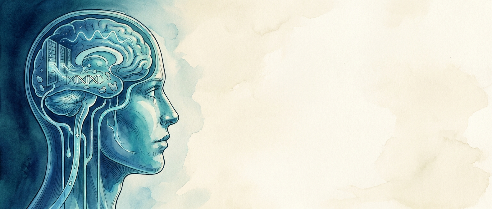
你的大脑在后台默默做着三件你不知道的事：排水、剪断 DNA、调节免疫。这一章的主要证据来自 2015–2026 年 Nature、Cell 等期刊。
证据 C（小鼠直接证据）｜ 🧪 可以试 ｜ 痛点：大脑昏沉 ｜ 十二柱：H10 细胞间通讯（脑-淋巴对话）
一句话：大脑的“污水”有一条出口经过你的脸和脖子。2025 年 Nature 发现，隔着皮肤轻压这条通道，小鼠的脑脊液外排量翻了一倍。
你可能也这样：连续 debug 四个小时，脑子像一锅粥，喝咖啡也不管用。
做法：每天 1–2 次，每次 1–2 分钟，方向始终向下、朝脖子： 1. 从眼周、鼻翼两侧，向下轻抹到下颌； 2. 沿下颌骨下缘，从下巴中央滑到耳垂下方； 3. 从耳下沿颈侧，向下轻抹到锁骨上方。
力度像涂面霜：皮肤微微移动就够了，不追求酸痛。
为什么：
打个比方：大脑没有垃圾车直达，它把代谢废物溶在脑脊液里，靠一套管道排出去，就像机房的排水系统。
这套排水系统很晚才被看清。2015 年，科学家才确认脑膜上有淋巴管，在那之前，教科书写的是“大脑没有淋巴管”。2025 年，韩国团队在 Nature 上把整条路线画全了：脑脊液从颅底出发，经过眼眶周围、鼻腔、上颚的淋巴管，汇入颈部浅表淋巴管，最后流进下颌下的淋巴结。这段颈部淋巴管就在皮肤下面，外面裹着一层会收缩的平滑肌。
关键实验：老年小鼠的这条通道变差了。研究者用一个控制力度的装置隔着皮肤轻压颈部浅表淋巴管，脑脊液外排量翻倍，老年小鼠的引流障碍也被纠正。
“按脸按脖子，帮大脑排水”，第一次有了直接的动物实验证据。上面的按摩路线，就是沿着这张路线图走的。
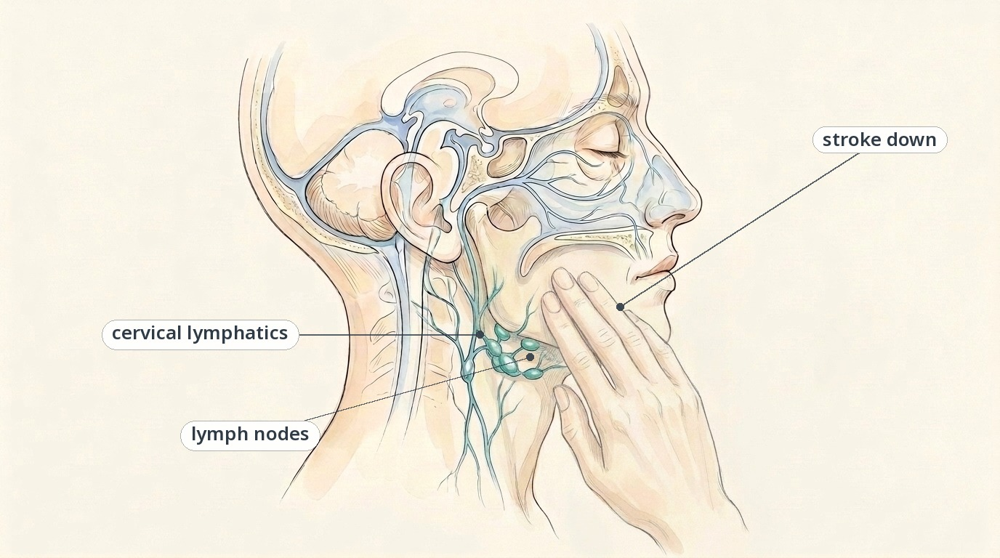
▲ 方向对，力度轻：脑脊液经颈部浅表淋巴管流向下颌下淋巴结
证据有多硬（C）： - 2015 年两篇里程碑论文确认了脑膜淋巴管的存在和引流功能（Louveau 2015；Aspelund 2015）。 - 2018 年：脑膜淋巴管功能随年龄下降，与阿尔茨海默病相关的病理有关（Da Mesquita 2018）。 - 2025 年：绘出了从脑脊液到颈部浅表淋巴管、再到下颌下淋巴结的路线；隔着皮肤的受控机械刺激让小鼠脑脊液外排翻倍（Jin 2025）。 - 为什么还是 C：证据来自小鼠，用的是控制力度的装置，不是人的手。人手按摩能不能达到同样效果、能不能让人头脑更清楚，还没有人体试验。
程序员场景：debug 卡壳时做一轮，替代刷手机；睡前做一轮，配合睡眠这个大脑排废的高峰期（见「睡眠债偿还表」）。
边界：颈部有肿块、甲状腺疾病、急性感染发烧时不做；不要按压颈动脉搏动处；轻柔即可，不用力。
笔者按：这是我标等级时最犹豫的一条。2025 年这篇 Nature 让我松了口气：路线图画出来了，动物身上也压出了效果。但从“小鼠 + 装置”到“人 + 手”，中间还隔着一个人体试验。等它出来，这条可能会是本指南第一个从推测升级的条目。
证据 C（动物机制，顶刊证据链）｜ 📖 了解即可 ｜ 痛点：学新框架、新语言时的“脑子烧了” ｜ 十二柱：H1 基因组不稳定
一句话：为了写下一条新记忆，神经元会主动把自己的 DNA 剪断，再修好接回去。记忆的代价，是一次受控的“基因组损伤”。
你可能也这样：连续三天啃一个新框架，脑子像过载的服务器，晚上睡一觉，第二天突然就通了。
为什么：
打个比方：这像在生产环境里做热更新。为了尽快上线新配置，系统先把一段代码拆开，改完再装回去。拆装本身有风险，所以必须配一套可靠的回滚和修复机制。
大脑真的在这样做。三篇顶刊连成一条证据链： - 剪开，为了快速开机：神经元被激活时，一种叫拓扑异构酶 IIβ 的酶会主动剪断特定基因附近的 DNA，让一批“即刻早基因”迅速打开（Cell 2015）。 - 剪开之后，有专门的修复队：突触活动会召集一个蛋白复合体（NPAS4–NuA4），把神经活动和 DNA 修复绑在一起（Nature 2023）。 - 断裂，成了记忆的一部分：小鼠学习后数小时，海马里一小簇神经元出现持续的 DNA 双链断裂，接着启动一条“感知 DNA”的炎症通路（TLR9）来修复。把这条通路关掉，小鼠的记忆就变差了。正是经历过“断裂—修复”的这批神经元，被招进了记忆回路（Nature 2024）。
反过来，作者也提醒：如果修复环节出问题，这个基本的记忆机制就会变成通往基因组不稳定和认知衰退的入口。
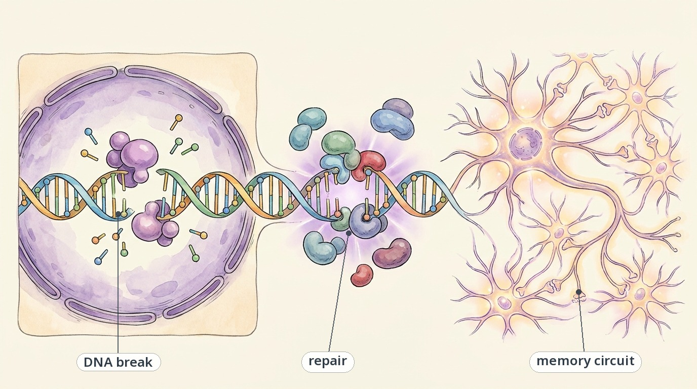
▲ 一条记忆的诞生：剪开 DNA → 修复 → 接入记忆回路
做法：这是一条认识大脑的条目，不需要你“做”什么。可以落地的是： - 学新东西的那几天，保证睡眠（「睡够 7 小时左右」），给大脑留出恢复时间； - 强度控制在“有点难但不至于宕机”，别连续通宵硬啃。
证据有多硬（C）：机制证据来自顶刊、证据链完整，但主要是小鼠和细胞实验；人脑是否同样如此，以及能否靠生活方式影响这个过程，还没有直接证据。
程序员场景：啃新东西时，大脑在物理层面“重构代码”，给它留出编译时间。
边界：“适应性断裂”不等于“学得越多断得越多越好”；这是机制科普，别过度演绎成“学习伤脑”。
笔者按：大脑为了写一条新记忆，主动折断自己的 DNA 再接回去。这是全指南我最想做成动画的一条：它让你重新看待每一次“学会了”。
证据 C（单篇人体研究，三个预注册实验）｜ 🧪 可以试 ｜ 痛点：身心交互 ｜ 十二柱：H10 细胞间通讯（神经—免疫对话）
一句话：把注意力温和地放在身体的感受上，皮肤的急性炎症反应会小约三分之一。这是 2026 年第一次在人体上测出来的。
你可能也这样：被蚊子叮了一口，越不管它越痒？还是越盯着它越痒？我们通常以为“别去想”最好。
为什么：
打个比方：大脑不只是“读取”身体的传感器数据，它还能反向下发配置。
2026 年 Nature Human Behaviour 的研究用可控的急性皮肤炎症做模型，做了三个预先注册的实验：同一个人，一次把注意力投向身体感受，一次被别的事分心。结果： - 注意力投向身体时，炎症反应只有分心时的约三分之二（论文表述为约 1.5 倍的差异）； - 这个效应很稳定：两个独立人群中，约 90% 的参与者都出现了； - 机制上有两条路：一条是注意力改变了大脑对同一份感觉输入的“放大倍数”；另一条是自上而下地调动了副交感神经（迷走神经）。
有意思的是，分散注意力能减轻疼痛的感受，但这项研究显示，在炎症这件事上，把注意力投向身体反而让免疫反应更受控。
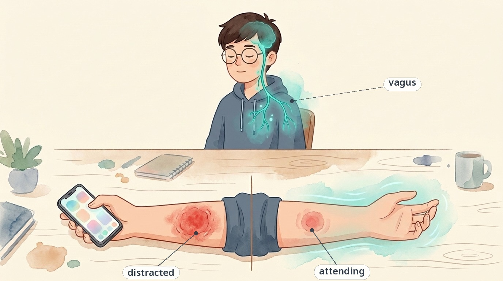
▲ 分心与注意身体：同样的皮肤炎症，反应大小不同
做法：身体某处出现急性不适（蚊虫叮咬、局部刺激）时，把注意力温和地投向那个部位 2–3 分钟：只是观察感受（热、痒、跳动），不用力想象“治愈”，也不去抓。
证据有多硬（C）：单篇论文，但内部包含三个预注册实验和两个独立人群，效应一致。仍需其他团队重复；目前只在急性皮肤炎症模型上验证过。
程序员场景：被打断时的烦躁、久坐的腰酸：先花 2 分钟“观察”它，再决定怎么处理（参考 冥想）。
边界：不替代任何治疗；慢性炎症、自身免疫病请遵医嘱。效应大小和适用范围，还需要更多研究。
笔者按：“意念治病”是养生号的重灾区。但这篇论文告诉你：注意力和免疫之间的对话是真的，只是它说的是“调节走向”，不是“治愈”。把这条收进来，就是示范怎么区分“有初步证据的神奇”和“纯神奇”。
证据 C（阿尔茨海默病早期人体试验；健康人属外推）｜ 📖 了解即可（设备 💸） ｜ 痛点：想“健脑” ｜ 十二柱：H10 细胞间通讯
一句话：每秒闪 40 次的灯光加 40Hz 的声音，能让小鼠大脑“冲洗”掉更多淀粉样蛋白；人体试验刚起步，健康人用来“健脑”还没有证据。
你可能也这样：在短视频里刷到“40Hz 专注音”“40Hz 助眠灯”，评论区说能提神、防老年痴呆，一台几百到几千元。
为什么：
打个比方：大脑里的神经元像一个合唱团。清醒专注时，有一种每秒约 40 次的整齐节拍，叫伽马节律。阿尔茨海默病患者的大脑，这个节拍会乱掉。
MIT 蔡立慧团队的想法很直接：从外面给一个 40Hz 的节拍，让大脑重新“跟拍”。 - 小鼠：每天看 40Hz 闪光、听 40Hz 声音，阿尔茨海默模型小鼠的病理改善、认知变好（Cell 2019）。 - 为什么有用：2024 年 Nature 给出一个答案：40Hz 刺激能促进类淋巴系统清运淀粉样蛋白，也就是帮大脑“排水”。这和「面颈部淋巴按摩」一节讲的是同一套排水系统，一个从里面推，一个从外面压。 - 人：轻度阿尔茨海默病患者的小样本试验（随机对照的 15 人）显示，每天 1 小时、连续 3 个月是安全可行的，大脑能跟上节拍（PLoS One 2022）。延伸研究中 5 名患者用了 2 年，没有不良事件，其中 3 人认知下降比对照人群慢（2025）。
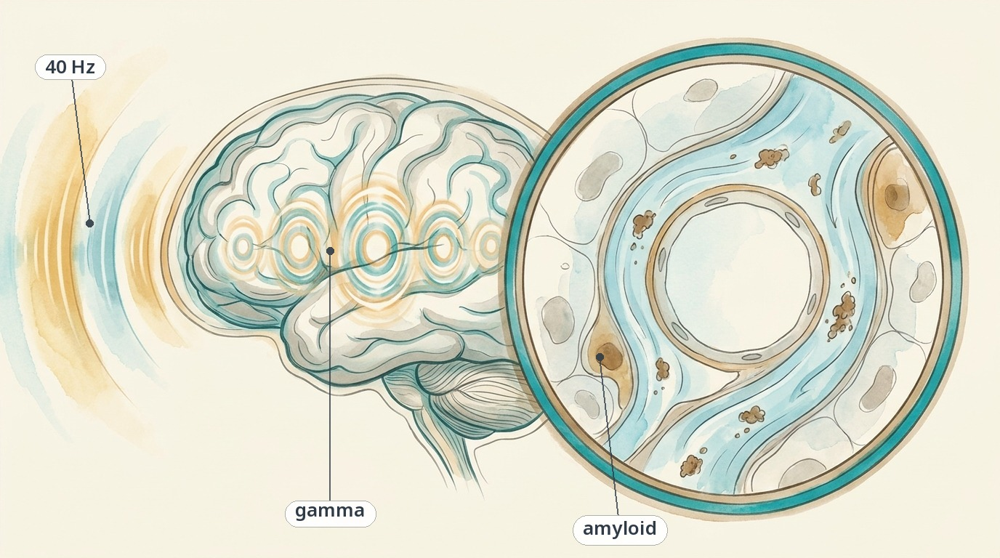
▲ 大脑的合唱团：40Hz 节拍与类淋巴清运
做法： - 这一节只需要“知道”，暂不推荐任何设备； - 健康人想让大脑保持节律，运动、社交、学新东西都是免费的来源； - 家里有轻度认知障碍或阿尔茨海默病的长辈，可以关注正规临床试验，在医生指导下参与。
证据有多硬（C）：机制和动物证据来自顶刊，但并不一致：纽约大学 Buzsáki 团队在两种阿尔茨海默模型小鼠上重复 40Hz 闪光实验。他们用电极直接记录，没看到海马等深部脑区的伽马节律被“带起来”，淀粉样蛋白也没有减少（Soula 2023）。人体证据只有阿尔茨海默病患者的小样本和开放标签研究，还没有大型随机对照试验。健康年轻人用来“健脑”“助眠”“提升专注”，没有任何试验证据，属于外推。
程序员场景：对“40Hz 专注音”保持清醒：卖得最火的场景，恰恰是证据最薄的场景。
边界：癫痫或光敏感的人，禁用闪烁光刺激；不要为了健康人“健脑”购买高价设备。
笔者按：40Hz 是全书未来感最强的一节：出自 MIT，故事性感，2024 年还找到了“冲洗大脑”的机制。但另一个顶尖实验室没能在小鼠身上重复出来，健康人健脑更是外推。等人体证据出来，别为预告片买票。
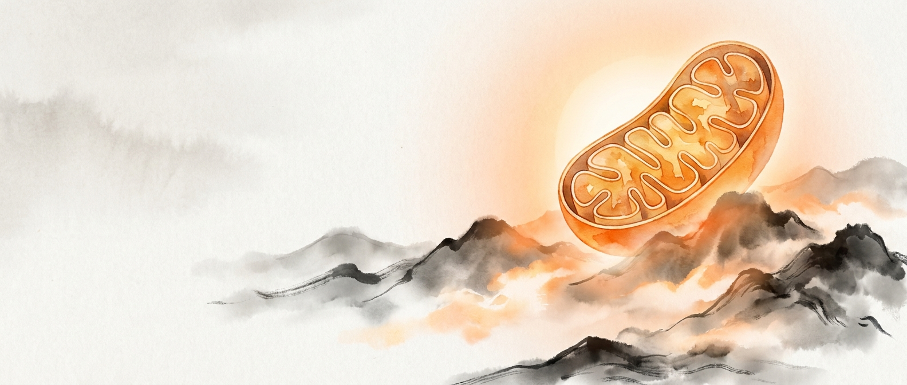
中医说的“阳气”，和细胞里的发电厂有什么关系？一个大胆的映射，一张新的温阳食单，以及练线粒体、护线粒体的两种方法。
证据：映射本身 D ｜ 食单逐项 B–C ｜ 📖 了解 + 🧪 食补可以试 ｜ 痛点：怕冷、乏力、下午没电 ｜ 十二柱：H7 线粒体
一句话：中医说的“阳气”，很像细胞里线粒体干的活。顺着这条映射，可以给“温阳”开出一张传统食谱里没有的新食单。
你可能也这样：手脚冰凉、怕冷、下午三点就没电。长辈说你“阳虚”，让你喝姜茶、冬天吃羊肉。
为什么：
中医讲“阳气”，主要说三件事：温煦（让身体暖）、推动（让身体有劲）、固护（抵御和修复）。巧的是，细胞里的线粒体也干三件事：产热、产能、自我质量控制。2022 年，一个中国团队在学术期刊上正式提出假说：线粒体是人体“阳气之本”（Luo 2022）。
| 阳气的功能 | 线粒体对应 | 程序员的说法 |
|---|---|---|
| 温煦：手脚暖 | 产热：棕色脂肪里的线粒体能“解偶联”，把能量直接变成热 | 电源发热 |
| 推动：有劲 | 产能：合成 ATP，细胞的通用“电力” | 供电 |
| 固护：能恢复 | 质量控制：坏线粒体被回收（线粒体自噬），新线粒体长出来 | 坏块回收 + 扩容 |
这张表的价值，不在于证明中医对，而在于它能生成新问题：如果“温阳”就是在帮线粒体干这三件事，那么，有哪些食物传统上不叫温阳，却在干同样的活？
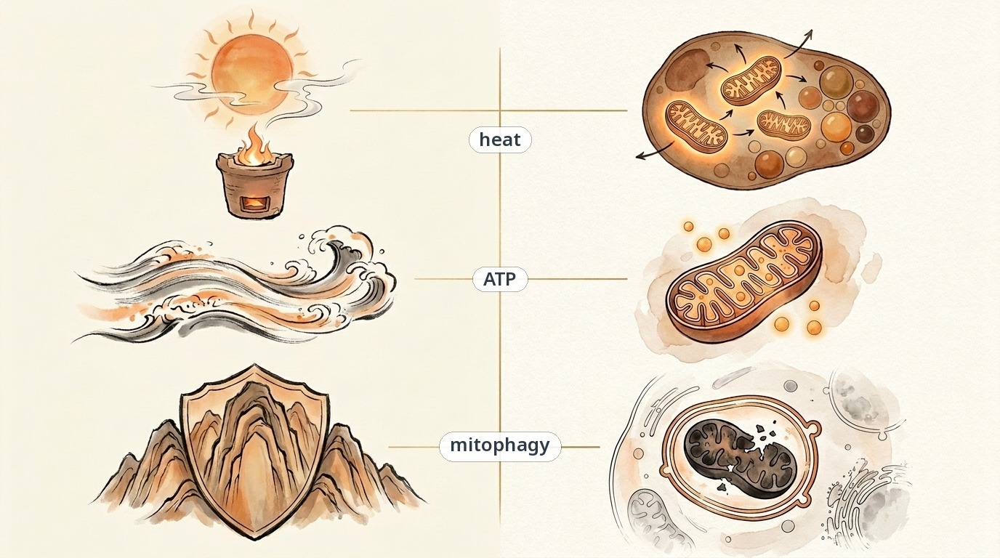
▲ 阳气三件事 × 线粒体三件事（映射假说）
第一步：传统温阳食材，现代怎么看
| 食材 | 传统说法 | 现代可能的对应 | 证据 |
|---|---|---|---|
| 生姜 | 温中散寒 | 小型人体试验：早餐配姜饮，餐后产热增加（Mansour 2012，10 人） | C |
| 辣椒 | 性热 | 辣椒素及不辣的“辣椒素酯”通过 TRPV1 受体激活棕色脂肪产热，有人体研究支持（Saito 2020 综述） | B |
| 肉桂 | 补火助阳 | 肉桂醛能直接让脂肪细胞产热（Jiang 2017，细胞与小鼠） | C |
| 羊肉 | 温补 | 富含左旋肉碱，它是把脂肪酸运进线粒体的“搬运工”；但肠道菌群会把肉碱转成 TMAO，与动脉粥样硬化相关（Koeth 2013） | C ⚠️ |
| 核桃 | 补肾温肺 | 富含鞣花单宁，可经肠道菌群转化为尿石素 A，一种线粒体自噬激活剂（见下表） | B–C |
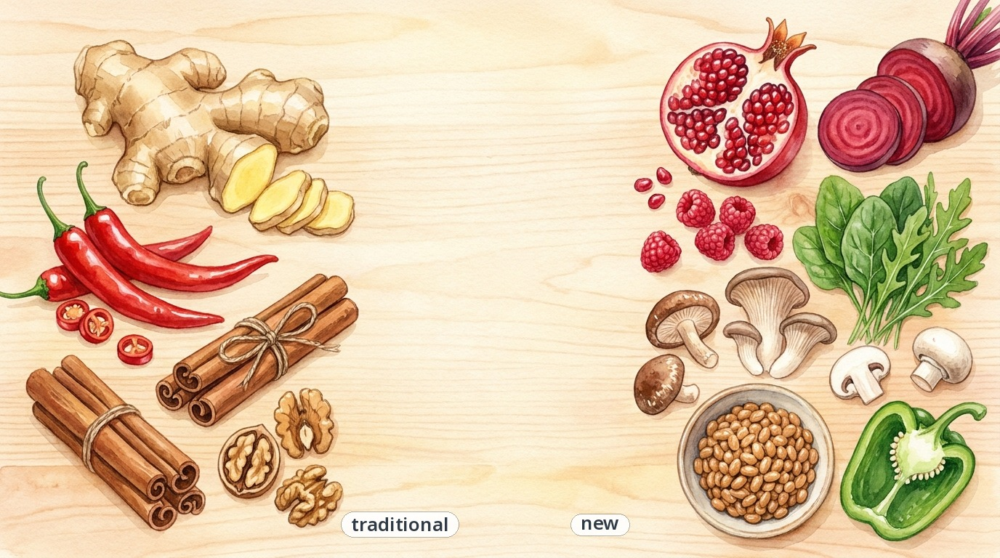
▲ 新温阳食单：左为传统温阳食材，右为按线粒体逻辑新推的食材
第二步：按线粒体逻辑新推的“温阳”食材
下面这些食物，传统食疗里不归为温阳，但按线粒体的逻辑，它们干的是同一类活。这是本指南提出的映射假说，每一项单独评级。
| 新食材 | 帮线粒体干哪件事 | 证据 |
|---|---|---|
| 石榴、树莓、核桃（→ 尿石素 A） | 固护：激活线粒体自噬，回收坏线粒体。人体 RCT 中，补充尿石素 A 改善了中年人的肌力和运动表现，以及老年人的部分肌肉耐力指标（老年人试验的主要终点步行距离未改善）（Andreux 2019；Singh 2022；Liu 2022） | B（补剂试验）；食物转化效率因人而异，取决于肠道菌群 |
| 甜菜根、菠菜、芝麻菜（膳食硝酸盐） | 推动：人体研究中，膳食硝酸盐让线粒体产能更“省油”（Larsen 2011） | B |
| 蘑菇（麦角硫因） | 固护：线粒体抗氧化，见「麦角硫因与蘑菇」 | C |
| 小麦胚芽、纳豆（亚精胺） | 固护：自噬，见「亚精胺与小麦胚芽」 | C |
本条的可检验预测（欢迎研究者认领）： 1. 如果映射成立，自觉“阳虚”的人，棕色脂肪活性、静息代谢率或肌肉线粒体功能应当偏低； 2. 传统温阳食材和上面的“新温阳食材”，都应能测到产热或线粒体指标的变化。
这两条都能用现成方法检验：PET-CT 看棕色脂肪、间接测热法测代谢率、磁共振波谱测肌肉线粒体功能。一个映射能不能留下来，要看它能不能被证伪。
做法：怕冷、乏力的人： 1. 先放大石头：「Zone 2 快走」（练线粒体最可靠的方法）、力量训练（「每周两次力量训练」）、睡眠。 2. 餐桌上：做菜放姜，能吃辣就加点辣椒；每天一把核桃；每周几次石榴或树莓、甜菜根或深绿叶菜、蘑菇。 3. 羊肉冬天可以吃，但红肉总量要控制。 4. 附子、鹿茸等温阳中药不要自己吃，需要中医辨证。
证据有多硬：映射本身是 D（假说级）。食单里的每一项按各自的证据单独评级（B–C）。整体是“方向值得研究，个人可以从餐桌上低成本尝试”。
程序员场景：把“补阳气”翻译成三行代码：练线粒体（Zone 2）、修线粒体（睡眠）、喂线粒体（新温阳食单）。
边界：“阳虚”是中医辨证概念，需要专业判断。甲状腺功能减退、贫血也会让人怕冷乏力，先去医院排除。 胃不好的人少吃辣；尿石素 A、硝酸盐等补剂不属于本条推荐，本条只讲食物。
笔者按：我把全书最深的水区放在了最前面。“阳气 = 线粒体”映射得再美，也只是假说；但好的假说能开出新的食单、提出能被证伪的预测，这比争论“中医科不科学”有用得多。这条的等级摆在那里，就是整个指南的态度：证据走到哪一步，我们就说到哪一步。
证据 B（运动量与死亡率：大型队列）｜ ✅ 去做 ｜ 痛点：体能下降、下午没电 ｜ 十二柱：H7 线粒体
一句话：“还能完整说话、但唱不了歌”的强度，每周 3–5 次，是给线粒体上课最便宜的方式。
你可能也这样：爬三层楼就喘，下午三点电量见底，办了健身卡却一年去了三次。
为什么：
打个比方：线粒体是细胞的电源模块。你不用它，它就降频、缩容；你持续给它中等负载，它就扩容：数量变多、效率变高。
Zone 2 指的是一个中等强度区间：心率约为最大心率的 60%–70%，主要靠线粒体“烧脂肪”供能，不会喘到说不出话。这个区间对线粒体的刺激足够大，身体又恢复得过来，每周可以做很多次。
早在 1967 年，Holloszy 就在动物肌肉里发现：耐力训练让肌肉的线粒体呼吸酶活性大幅升高。半个多世纪以来，这个结论被反复验证。而线粒体功能衰退，正是衰老的十二大标志之一（见「长寿十二柱」）。
这也是「阳气与线粒体」一节说的“练线粒体”：想让身体暖起来、有劲，最可靠的方法不是吃什么，而是动起来。
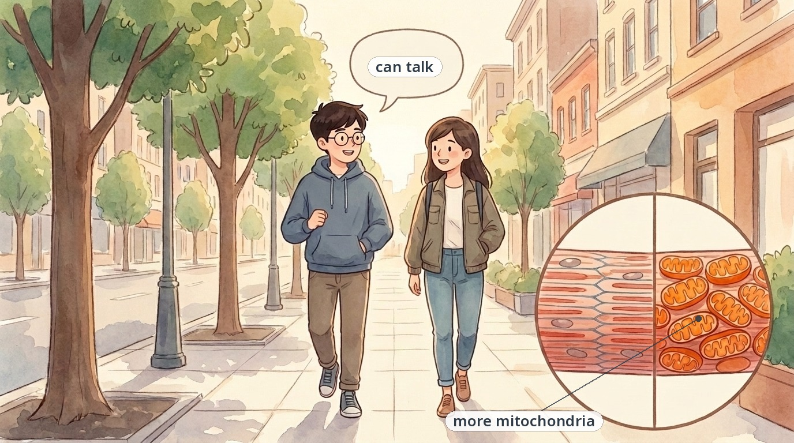
▲ 线粒体的训练课：能说话、唱不了歌
做法：每周 3–5 次，每次 30–45 分钟，快走、慢跑、骑车都行。强度用说话测试：能说完整的句子，但唱不了歌。不用买心率表。
证据有多硬（B）： - 汇总 66 万人、追踪 14 年的分析：休闲时间的中高强度运动量和死亡风险呈剂量关系。达到指南推荐量（每周 150 分钟中等强度）的人，死亡风险比不运动的人低约 3 成；做到推荐量的 3–5 倍，低约 4 成；再多也没有看到害处（Arem 2015）。 - 为什么不是 A：这是队列研究，不是随机试验；而且研究的是总运动量，不是“Zone 2”这个具体强度区间。Zone 2 是运动生理学上训练线粒体的合理区间，但它比其他强度更好的直接证据有限。
程序员场景：通勤的最后一公里快走；代码评审前绕楼一圈；周末骑车代替打车。不用换衣服，不用去健身房。
边界：有心血管病史的人先咨询医生；刚开始从每次 15–20 分钟起步。
笔者按：长寿研究绕不开线粒体，Zone 2 是给线粒体上课最便宜的方式：不用办卡，不用装备，“能说话但唱不了歌”这一句就够了。
证据 C（观察性队列）｜ 🧪 食补可以试；补剂 💸 ｜ 痛点：长寿维生素 ｜ 十二柱：H7 线粒体 · H11 炎症
一句话：蘑菇里的麦角硫因，人体专门造了一个“搬运工”来吸收它；血液里含量高的老人，痴呆风险更低。炒个蘑菇，是最便宜的长寿下注。
你可能也这样：点外卖时总在纠结吃什么“健康”。
为什么：
打个比方：如果系统专门为某个依赖包写了一个安装器，说明这个包大概率很重要。
麦角硫因是一种抗氧化物，人体自己不能合成，只能从食物里来，蘑菇是最主要的来源。人体细胞上有一个专门运输它的转运蛋白，会把它主动“搬”进细胞、在一些组织里积累起来。所以有学者把它叫作“长寿维生素”。
人群里的线索越来越多： - 日本久山町研究：1344 名 65 岁以上、起初没有痴呆的老人，追踪中位 11.2 年。血清麦角硫因越高，全因痴呆和阿尔茨海默病的风险越低；校正了心血管、生活方式和蔬菜摄入等因素后依然成立（2025）。 - 记忆门诊的老人：血浆麦角硫因低，预示之后的认知和功能下降更快（2022）。 - 新加坡社区研究：常吃蘑菇的老人，轻度认知障碍的比例更低（2019，横断面研究）。
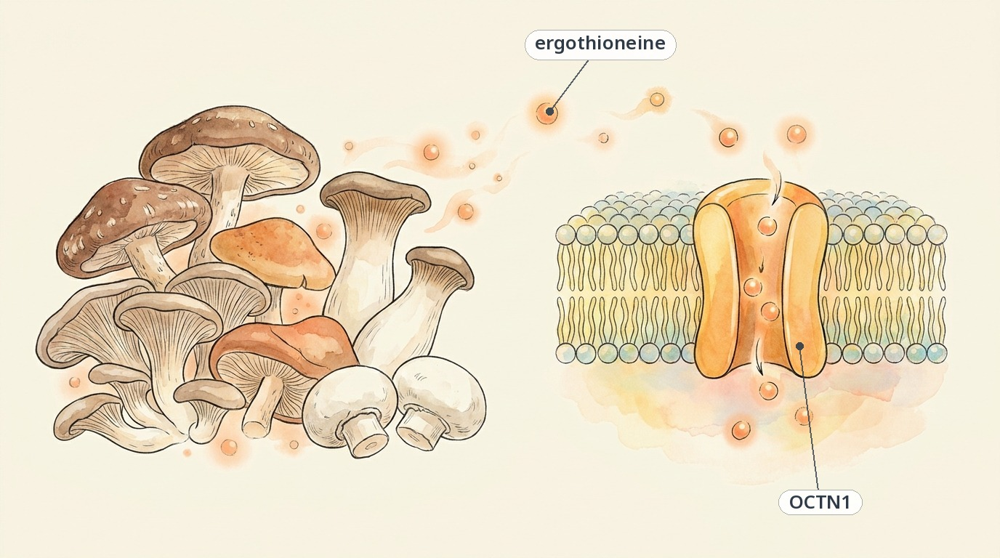
▲ 专属搬运工：蘑菇里的麦角硫因经专用转运体进入细胞
做法：蘑菇入菜：香菇、平菇、杏鲍菇、口蘑，每周 2–3 次，换着吃。食补优先，暂不推荐补剂。
证据有多硬（C）：全部是观察性研究，说明“相关”，不能证明“吃蘑菇 → 防痴呆”。还没有补充麦角硫因能预防认知下降的大型人体试验。
程序员场景：外卖点一道蘑菇类的菜，是最不费劲的“长寿投资”。
边界：观察性证据不等于因果；不要囤高价麦角硫因补剂；野生菌务必确认可食用。
笔者按：相关性不是因果。但当要做的事只是“炒个蘑菇”这种几乎零风险的小事时，观察性证据也够下单了。这叫贝叶斯式点菜。
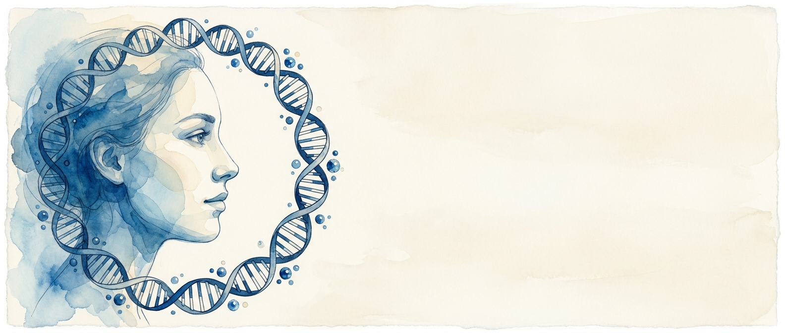
从一张脸、一管血、一段压力史里，都能读出一点你“真正”的年龄，但都不是精确读数。
证据 C（大样本模型，群体层面成立）｜ 📖 了解即可 ｜ ⚠️ 利益相关 ｜ 痛点：我到底老得快不快 ｜ 十二柱：—（看脸估年龄的时钟，与「甲基化时钟」对照）
一句话：奶奶说“印堂发黑要休息”；中国团队用面部红外热像，把“看面相”做成了能预测代谢病的 AI 时钟，而且这个“脸部年龄”能被运动改变。
你可能也这样：同学聚会，有人看着比实际年轻十岁，有人老十岁。“看起来多大”到底有没有意义？
为什么：
打个比方：脸是一块免费的监控面板，只是以前没人会读。
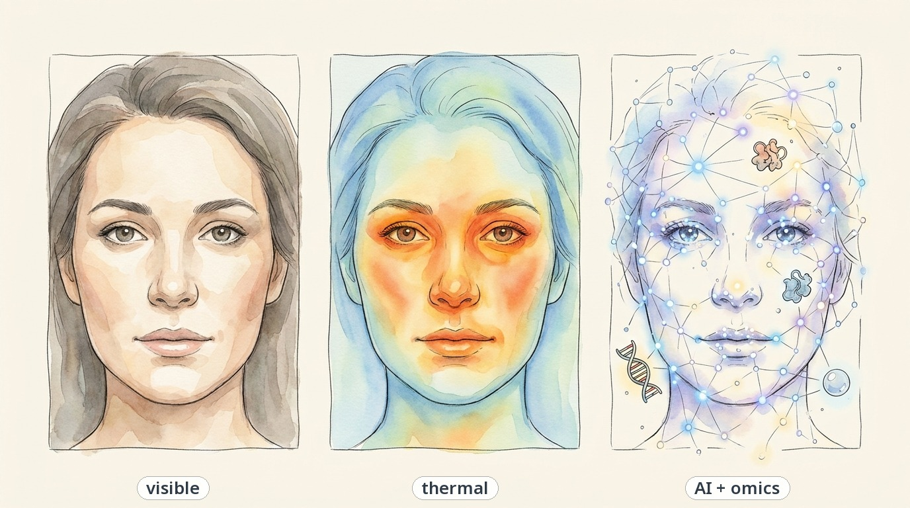
▲ 同一张脸的三种读法：肉眼看气色、红外看热分布、AI 补全多组学
做法： - 了解“看脸估年龄”这类时钟能回答什么、不能回答什么； - 能落地的是那句关键结论：热年龄可以被运动改变，所以回到「每天动起来」「Zone 2 快走」； - 商业“AI 面相测衰老”产品谨慎看待：模型不透明，误差未知。
证据有多硬（C）： - 样本量大、有独立验证，在群体层面成立。 - 为什么不是 B：个体误差约 5 年；看到的是关联，不是因果；“运动能改变热年龄”目前主要来自这一个团队的数据，还需要别的团队重复；模型在汉族人群里训练，用到其他人群要重新验证。
程序员场景：每天早上镜子里的气色，是免费多模态传感器的低配版，认真看一眼。
边界：误差显著；相学话术（“夫妻宫”“财帛宫”）和这些研究无关，不要混用。维护方从事衰老检测相关业务，见利益冲突声明。
笔者按：奶奶说的“印堂发黑要休息”，机器学习版是“面部热分布偏移，提示代谢年龄偏高”。隔着一百年的两套语言，说的是同一张脸。和「甲基化时钟」对照着读：一个从血液或唾液读，一个从脸上读，都指向同一件事：年龄不是一个数。
证据 B（测量学）｜ 📖 了解即可 ｜ ⚠️ 利益相关 ｜ 痛点：我的身体到底几岁 ｜ 十二柱：H3 表观遗传
一句话：DNA 上的化学“书签”会随年龄越积越乱，读它就能估出生物年龄；但测一次能指导你做什么，还没有定论。
你可能也这样：刷到广告“测出生物年龄比实际小 8 岁”，有点心动；转念一想：这个数字是怎么算出来的？测完我又该干嘛？
做法： - 先把概念装进脑子：生物年龄可以测，不同的“时钟”读数会不一样。 - 看到商业检测，问四个问题：用的是哪个时钟？训练它的人群和你像不像？同一份样本重复测，误差有多大？有没有干预前后的对比，还是只有一个单点读数？ - 真正能落地的行动，不在检测本身，在「每天动起来」「睡够 7 小时左右」这些大石头上。
为什么：
打个比方：DNA 是一套代码，甲基化是贴在代码上的注释和开关，决定哪些函数被调用、哪些被注释掉。年轻时这些开关排得整整齐齐；随着年龄增长，有的地方开关越加越多，有的地方掉了，像一个维护多年的老项目，注释越来越乱。
2013 年，Horvath 用约 8000 份样本，挑出 353 个“最随年龄变化”的位点，拟合出一个模型。它的误差只有三四岁，几乎能在所有组织里用。这就是第一代甲基化时钟。之后的时钟越做越细：有的预测死亡风险，有的测“衰老速度”。
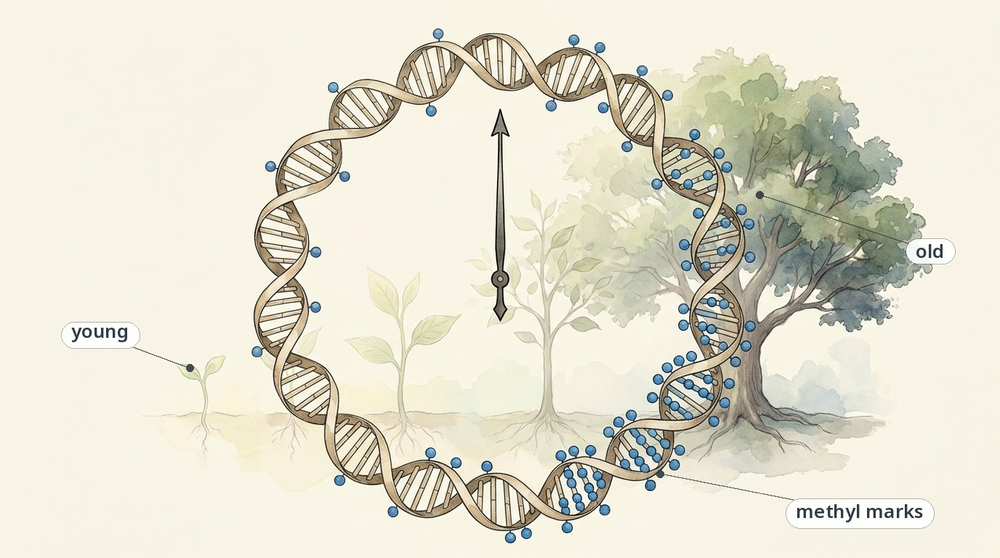
▲ 甲基化时钟：DNA 上的甲基标记随年龄改变，读它就能估出年龄
证据有多硬（B）： - 作为测量工具，证据扎实：时钟能在群体里稳定地估算年龄（Horvath 2013）；新一代时钟读数偏“老”的人，后续疾病和死亡风险更高（GrimAge，Lu 2019）。 - 作为行动指南，证据不够：“某个干预让时钟变年轻 = 让人更长寿”，还没有被证明。 - 为什么只给“了解即可”：个人单次读数有误差。同一份样本测两次，有的经典时钟读数能差到 9 岁；改进算法后，多数重复能落在 1.5 岁以内（Higgins-Chen 2022）。不同时钟也会给出不同的数字。拿单次读数做决策，价值有限。
程序员场景：把它当监控里的一个指标，不是 SLA。指标偏了值得留意，但不要为了把指标调好看去改系统。
边界：时钟不是命运；一次检测不说明问题；不同公司、不同时钟的结果不能直接比较。维护方从事衰老检测相关业务，见利益冲突声明。
笔者按：这是我自己的行当，所以更要说清楚：时钟能告诉你“偏没偏”，还不能告诉你“怎么改”。和「一张脸能读出你的生物年龄」对照着读：一个从血液或唾液读，一个从脸上读，都指向同一件事：年龄不是一个数。
证据 B（关联）｜ 📖 了解即可（行动见「冥想十分钟」「Zone 2 快走」「睡眠债偿还表」） ｜ 痛点：长期高压，身体会不会记账 ｜ 十二柱：H1 基因组 · H2 端粒 · H8 细胞衰老
一句话：长期压力会在染色体末端“记账”；管理情绪不是矫情，是基因组维护的一部分。
你可能也这样：连续几个月赶项目、扛线上事故，嘴上说“扛过去就好了”。项目上线了，人却像老了几岁。
做法： - 把慢性压力当作有生理后果的事来管：每天 10 分钟冥想（「冥想十分钟」）、每周几次快走（「Zone 2 快走」）、把睡眠还上（「睡眠债偿还表」）。 - 身边要有一个能说话的人（见大石头「有人可以说话」）。 - 大的压力事件过去后，主动给自己安排一段恢复期，别无缝衔接下一个冲刺。
为什么：
打个比方：染色体两端有一段保护帽，叫端粒，像鞋带头上的塑料套。细胞每分裂一次，塑料套就磨掉一点；磨得太短，细胞就停止分裂、进入衰老状态。
2004 年，Epel 和后来获得诺贝尔奖的 Blackburn 研究了一群照护慢性病孩子的妈妈：压力感受越重、照护年头越长，她们白细胞的端粒越短，修补端粒的端粒酶活性也越低。压力感受最重的那组和最轻的那组相比，端粒短出来的量，相当于至少多老了十年。不过这项研究只有 58 位女性。
后来的大样本研究给这个故事降了温： - 汇总 22 项研究、近 9000 人，自我感受的压力和端粒长度确实相关，但相关性非常弱，量级和肥胖对端粒的影响差不多（Mathur 2016）。 - 汇总 38 项研究、3.4 万人，抑郁症患者的端粒偏短，效应量小（Ridout 2016）。 - 2025 年一项小鼠研究发现，长期处在“被欺负”的社交压力下，体内衰老细胞会增多；但把这些衰老细胞清掉，健康状况并没有跟着变好（Lyons 2025）。
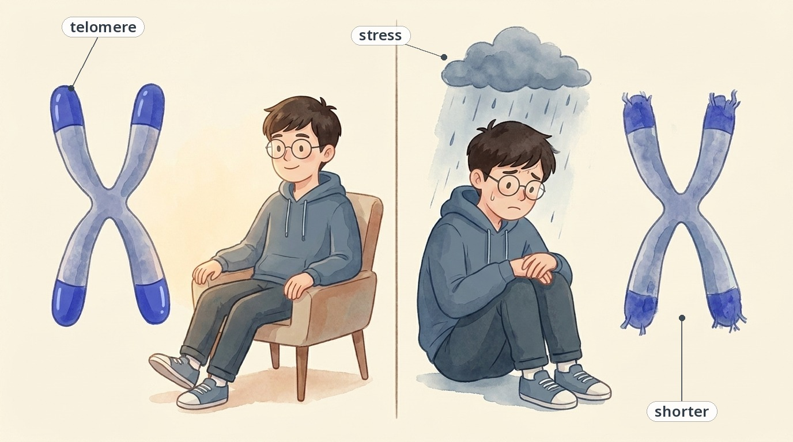
▲ 情绪与基因组：长期压力下，染色体末端的端粒更短
证据有多硬（B）： - 人群研究方向一致：压力、抑郁和端粒偏短相关（Epel 2004；Mathur 2016；Ridout 2016）。 - 但效应量小：放到个人身上，压力只是影响端粒的众多因素之一。 - 为什么不是 A：这些主要是关联研究，因果方向（是压力导致端粒短，还是有别的共同原因）还在研究；“管理情绪能让端粒变长”的干预证据也在积累中。
程序员场景：连续高压冲刺之后，安排一周“低负载迭代”：不排新需求、按时下班、补觉，像给系统做一次冷却。
边界：关联不等于因果；抑郁症是疾病，治疗优先，端粒长度不是 KPI，也不建议为此去测端粒。
笔者按：情绪是有分子后果的，这不是鸡汤；但后来的大样本也提醒我们，这个后果在单个人身上没有最初那篇论文看起来那么大。我想让程序员记住的不是“端粒”这个词，而是一个工程直觉：长期过载的系统一定会有损耗，只是日志写在你看不见的地方。
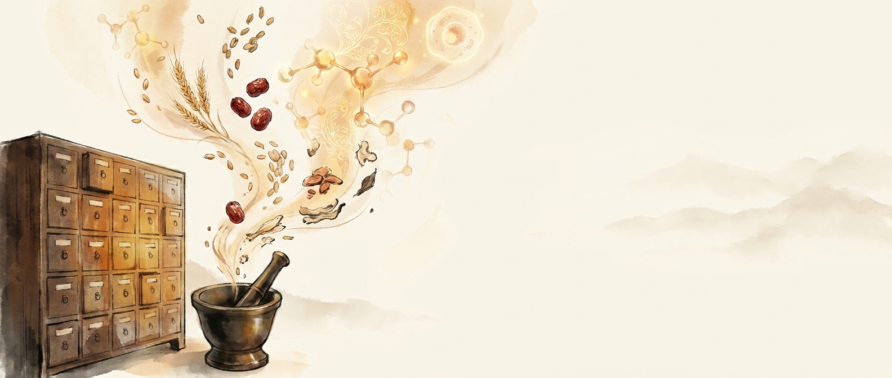
两千年的经验，放到同一把证据尺子上：哪些已经拿到证据，哪些还在路上，哪些只是映射。
证据 C ｜ 📖 了解即可 ｜ 痛点：情绪低落、心神不宁 ｜ 十二柱：H5 自噬 · H11 炎症
一句话：一张 1800 年前的经方，君药是小麦；今天，小麦胚芽成了自噬研究里的明星食材。经方找中医，胚芽放进早餐。
你可能也这样：压力大的那几周，莫名想哭、心慌、睡不踏实。听长辈说过“甘麦大枣汤安神”，又不知道靠不靠谱。
做法： - 甘麦大枣汤是处方，不是食谱：要用，找中医师辨证。 - 平民版：把小麦胚芽放进主食，比如早餐燕麦里加一两勺胚芽，或者选带胚芽的全麦面包。 - 情绪问题持续两周以上、影响工作生活，先看医生。
为什么：
这一节有两条线，在同一颗麦粒上相遇。
经方线：东汉张仲景《金匮要略》里，甘麦大枣汤只有三味药：小麦、甘草、大枣，用来治“脏躁”，也就是情绪不稳、悲伤欲哭、坐立不安。2014 年的一项 meta 分析汇总了 10 项治疗抑郁的随机试验，结果偏正面。但这 10 项全部以中文发表，方法学质量普遍偏低。2025 年的小鼠研究提示，它可能通过“肠道菌群–代谢–炎症”这条轴起作用。
现代线：小麦胚芽是麦粒里将来发芽的那一小块，营养密度最高，也是膳食亚精胺含量最高的食物之一。亚精胺能激活自噬，也就是细胞的“垃圾回收”（详见「亚精胺与小麦胚芽」）。
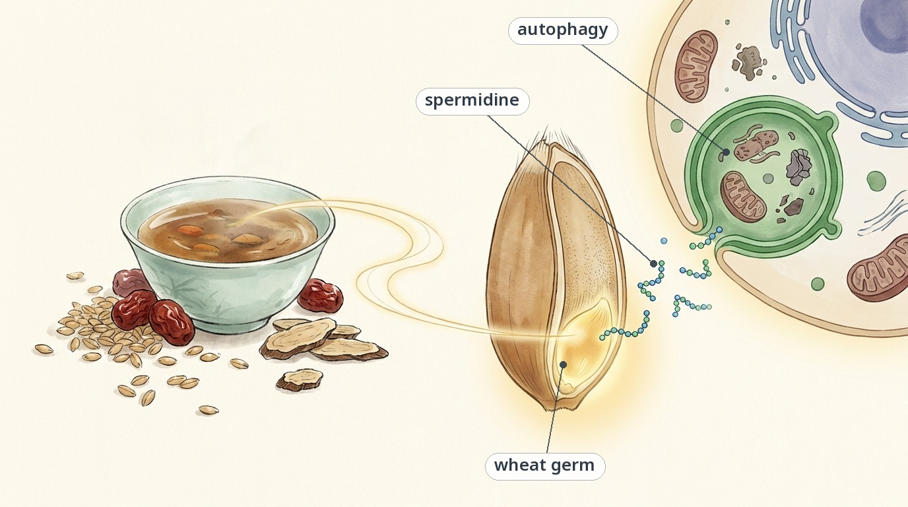
▲ 一碗经方，一颗麦粒：两条线在小麦上相遇，但彼此不能当证据
证据有多硬（C）： - 经方：有 meta 分析，但纳入的试验少、质量偏低，作者自己也呼吁做更严格的研究；机制来自动物实验。 - 胚芽与亚精胺：食物含量明确；亚精胺补剂的人体试验结果并不亮眼（见「亚精胺与小麦胚芽」）。 - 为什么不是 B：缺少高质量、大样本的人体随机对照试验。
程序员场景：情绪低谷期，给自己一个低成本的早餐仪式：一碗胚芽燕麦。它不是药，但比深夜外卖对身体友好。
边界： - 经方使用请找中医师。它不能替代精神科治疗，也不要自行和抗抑郁药换着吃。 - 方中有甘草，长期大量服用可能升高血压、降低血钾，高血压和心脏病患者尤其要遵医嘱。 - 乳糜泻或麸质过敏者避开小麦制品。
笔者按：这一节是全书故事密度最高的一条。我不说“古人早就知道”，我说的是：一样好食材，经得住两套完全不同的知识体系反复检验。故事可以讲得漂亮，证据要说得老实。
证据 B（肌少症、平衡）+ D（筋膜机制映射）｜ 🧪 可以试 ｜ 痛点：久坐僵硬、肌肉流失 ｜ 十二柱：H4 蛋白稳态
一句话：八段锦对老年人的肌肉和平衡有随机试验证据；“练的是筋”这层解释，只走到了一半。
你可能也这样：坐了一天，起身时腰背像生锈；想运动，又不想换衣服去健身房。公园里大爷大妈练的八段锦，看着慢悠悠的，真有用吗？
做法： - 跟练视频每天 15–20 分钟，八个动作一套下来大约 12 分钟。 - 要领是拉、伸、旋拧：每个动作做到有牵拉感，但不痛。 - 想更省事，只做第一式“两手托天理三焦”：双手交叉上举、掌心向上，伸展 5 次。
为什么：
这一节示范了本指南的方法：证据走到哪一层，话就说到哪一层。
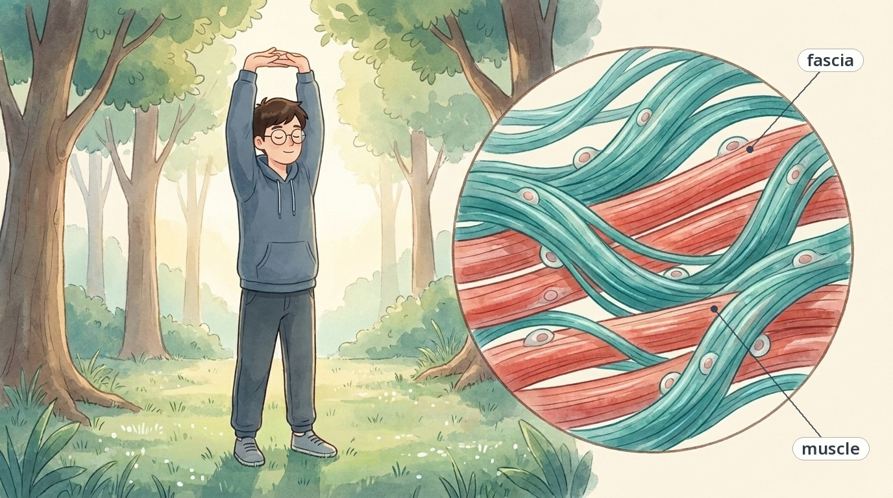
▲ 八段锦“两手托天”与筋膜：胶原纤维包裹肌肉
证据有多硬（动作层 B，机制层 D）： - 动作层：有随机对照试验，但只有 90 人、单中心，研究人群是有肌少症的老年人。 - 机制层：筋膜研究是综述级；“练八段锦 → 改善筋膜 → 延缓衰老”这条链没有被直接验证。 - 为什么不是 A：样本量和随访时间有限，年轻人群的数据少。
程序员场景：工位久坐的反向操作。午休前或下班后，用一套八段锦代替刷短视频；会议间隙做一式“两手托天”。
边界：有慢性病的人循序渐进；膝关节不适时，减小马步下蹲的幅度；动作中出现疼痛就停。
笔者按：四层证据，逐层递减，最后一层诚实留白，这是全指南方法论的自证。传统功法值不值得练？动作层的证据已经足够回答“值得”，不需要靠玄学加分。
证据 B（餐后血糖）｜ 🧪 可以试 ｜ 痛点：饭后犯困、血糖坐过山车 ｜ 十二柱：H6 营养感知 · H12 菌群
一句话：随餐吃点醋，能把餐后血糖压低一点；想养菌群，靠的是膳食纤维，不是喝醋。
你可能也这样：中午一大碗盖浇饭，下午两点眼皮打架。听说“喝醋降血糖”“醋能排毒”，不知道哪句是真的。
做法： - 凉拌菜、饺子、面条，随餐加 1–2 汤匙醋（陈醋、米醋、苹果醋都行），别空腹喝醋。 - 同时把膳食纤维吃够：燕麦、豆类、蔬菜水果，这是喂肠道菌群的饭。 - 两件事分开理解，别把“喝醋”当成“养菌”。
为什么：
这一节讲的是同一个分子、两条路。
第一条路：吃进去的醋。醋的主要成分是乙酸。随餐吃醋会让胃排空慢一点，碳水进入血液的速度也慢一点，餐后血糖的峰值就被削低了。2017 年的系统综述和 meta 分析汇总了多项临床试验，结论是醋可以削弱餐后的血糖和胰岛素峰值。
第二条路：菌群自己产的乙酸。膳食纤维人体消化不了，到了大肠被细菌发酵，产出短链脂肪酸，乙酸是其中含量最多的一种。短链脂肪酸给肠道细胞供能，也参与调节代谢和免疫（Cell 2016 综述）。
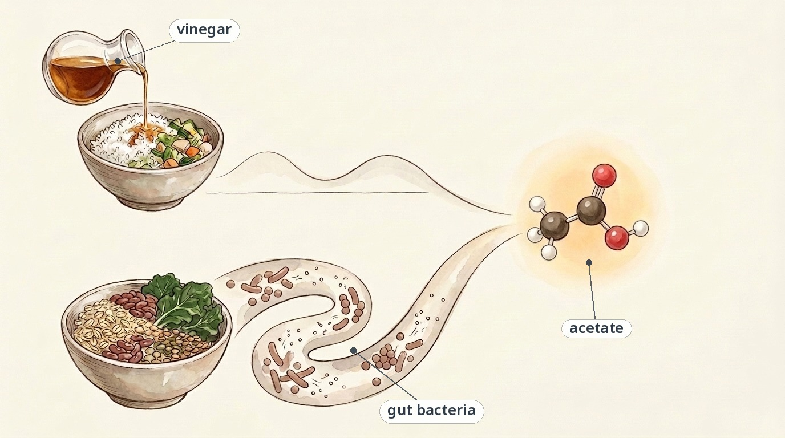
▲ 同一个乙酸，两条路：随餐吃醋，和菌群发酵膳食纤维
证据有多硬（B）： - 餐后血糖：系统综述 + 多项小型随机对照试验。单个试验的结果并不完全一致，合起来看，餐后血糖和胰岛素的峰值都被削低了，幅度中等。 - 为什么不是 A：试验规模小、观察时间短，还没有“长期吃醋 → 少得糖尿病”的硬终点证据。
程序员场景：外卖里碳水最重的那一餐，加一碟醋，是成本最低的餐后血糖管理。
边界：胃食管反流、胃溃疡的人慎用；别空腹喝醋，也别直接喝浓醋，会伤牙釉质和食道；醋不是“排毒神药”。
笔者按：这一节示范了“扯得妙”和“扯得错”的分界线：食醋里的乙酸和菌群发酵出来的乙酸是同一个分子，这很妙；但如果因此说“喝醋养菌群”，就扯错了。两条证据链各自成立，交汇处留给读者惊叹就好。
证据 B（慢支、慢阻肺的化痰；与长寿无关）｜ 📖 了解即可（药品） ｜ 痛点：感冒后痰黏咳不出 ｜ 十二柱：H11 炎症
一句话：NAC 是药典里的老牌化痰药，本职是化痰，不是日常保健品。
你可能也这样：感冒好了一半，喉咙里总有一口黏痰，咳不出也咽不下，夜里被它弄醒好几次。
做法： - 痰液黏稠难咳时，可以在医生或药师指导下使用 N-乙酰半胱氨酸（NAC），按说明书用。 - 多喝水、保持空气湿润，是化痰的基础。 - 不建议把 NAC 当日常补剂长期自己吃。
为什么：
打个比方：黏痰像一团被很多“小扣子”扣在一起的网。这些扣子是黏蛋白分子之间的二硫键。NAC 带着一个活泼的硫原子，能把这些扣子解开，网散了，痰就变稀，气道里的纤毛就扫得动了。
这件事证据清楚，但效果没有想象中大： - Cochrane 系统综述（2019，38 项试验、1 万多人）：慢性支气管炎和慢阻肺患者用黏液溶解剂（包括 NAC），急性加重小幅减少，大约每 8 个人用药，能多 1 个人在研究期间不发作。而且越新、越长的试验，效果越小。 - 2000 年专门针对口服 NAC 的分析：连用 12–24 周，约一半人没有急性加重，安慰剂组约三成；副作用和安慰剂差不多。 - 要注意：这些证据都来自慢性气道病患者。感冒后一过性的黏痰，多数会自己好，NAC 能帮多少，证据少得多。
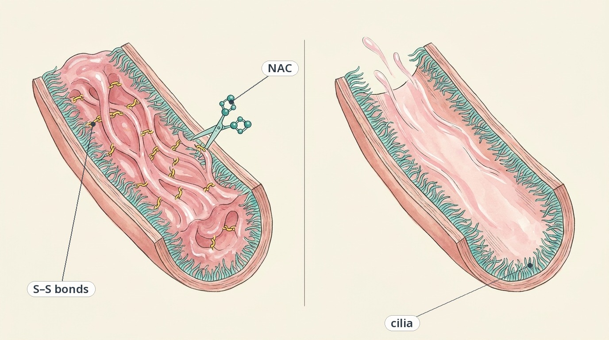
▲ NAC 剪断黏液里的二硫键：稠痰变稀，纤毛扫得动
证据有多硬（B，针对化痰）： - 减少慢性支气管炎、慢阻肺急性加重：Cochrane 系统综述 + meta 分析，效果小但稳定。 - 注意：这个等级只针对“化痰”。它和长寿没有关系，所以行动建议是“了解即可”。
程序员场景：秋冬季，药箱里值得备着的老药之一。真用之前，先问一句医生或药师。
边界：这是药品。吸入剂型可能诱发支气管痉挛，哮喘患者用前务必问医生；胃溃疡患者慎用；不要长期自行服用。
笔者按：老药、便宜、证据清楚，NAC 是“古方新解”这一章里最不玄的一条。化痰是它的本职，抗衰是它的兼职，别搞反了。
证据 D ｜ 🧪 可以试（放松仪式） ｜ 痛点：睡前脑子停不下来 ｜ 十二柱：—
一句话：颂钵的声音能让人很快放松下来，可以当睡前仪式；“频率疗愈”是营销，不是科学。
你可能也这样：关了电脑，脑子还在跑代码；躺下后，白天的会议在脑内自动重播。
做法： - 睡前 10–15 分钟，听一段颂钵、白噪音或舒缓的低频音乐，音量调低。 - 配合「睡前 1 小时屏幕宵禁」：放下手机后，用声音给大脑一个“下班信号”。 - 不用买昂贵的“疗愈钵”，免费音频就够了。
为什么：
打个比方：大脑从“工作模式”切到“睡眠模式”需要一个过渡，就像服务器下线前要先停止接收新请求。持续、单调、有余韵的声音能把注意力从思绪里拉出来，呼吸和心跳跟着慢下来。这是一种放松反应。
研究支持这一点，但只到这一点：
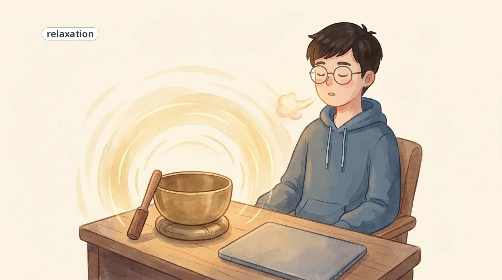
▲ 颂钵：声音形态的放松，不是频率疗愈
证据有多硬（D）： - 有放松反应的初步证据；免费的放松方法也能做到类似效果。 - “疗愈”“治病”之类的宣称不成立。 - 为什么不是 C：研究数量少、质量偏低，结局多为主观量表。
程序员场景：屏幕宵禁之后的 15 分钟声音仪式。它能帮你从信息流切到睡前状态，仅此而已，但已经足够。
边界：不能替代失眠的规范治疗（慢性失眠首选认知行为治疗）；声音敏感或耳鸣的人，自己选择音量和音色。
笔者按：放松反应是真的，神话不是。把颂钵当“声音版的屏幕宵禁”用，物尽其用；当“频率疗愈”花大价钱买，就是智商税。
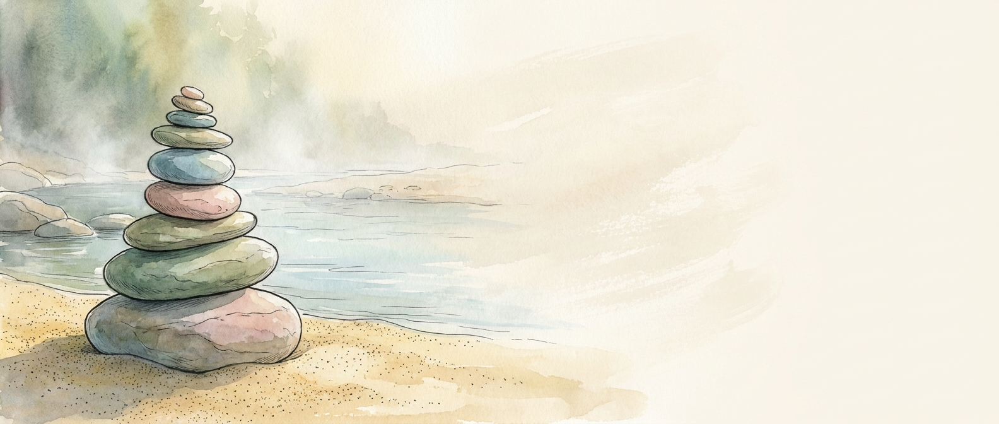
往罐子里装东西，要先放大石头，再放沙子。下面十件事是“大石头”：证据都是 A 级，效应量也普遍比本指南里的补剂条目大得多。补剂、按摩、颂钵都是沙子。石头没放好，沙子装得再多也没用。
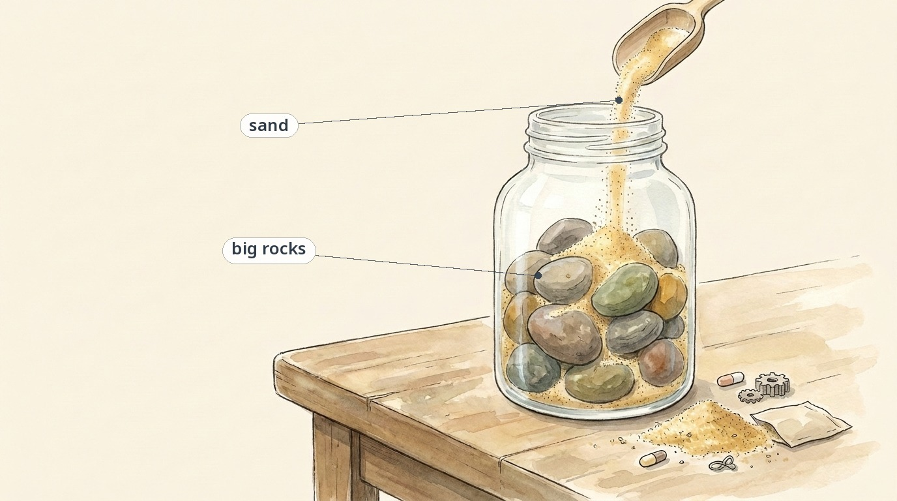
▲ 大石头与沙子：罐子里先放大石头，再倒沙子
| 大石头 | 一句话 | 证据 |
|---|---|---|
| 不吸烟 | 30 多岁前戒烟，能把失去的约十年寿命大部分找回来 | A ✅ |
| 每天动起来 | 步数和心肺体能，是最硬的“寿命指标” | A ✅ |
| 每周两次力量训练 | 肌肉是你的养老金账户 | A ✅ |
| 睡够 7 小时左右 | 睡太少、睡太多都和早死相关；打鼾要查 | A ✅ |
| 少喝酒 | 每周超过约 100 克纯酒精，死亡风险开始上升 | A ✅ |
| 知道自己的血压 | 高血压没感觉，三十几岁也可能找上门 | A ✅ |
| 看懂体检里的血脂和血糖 | “坏胆固醇”每降 1 mmol/L，心梗、中风等事件少约五分之一 | A ✅ |
| 以植物为主的地中海式饮食 | 橄榄油、坚果、鱼、蔬菜豆类：吃出来的心血管保护 | A ✅ |
| 管住腰围 | 体重和腰围，是慢病风险的仪表盘 | A ✅ |
| 有人可以说话 | 社交关系和寿命的关联，量级接近吸烟 | A ✅ |
读之前先说两句： - 下面常出现的“全因死亡”，指不管什么原因的死亡，是衡量寿命最硬的指标。 - 这十条里，血压、血脂、饮食有随机试验；步数、睡眠、体重、社交主要来自几十万人的长期追踪研究。A 级的意思是证据量大、结论稳定，不等于每一条都被随机试验证明了因果。
另外两件不需要论证的事：按年龄做癌症筛查，按时接种疫苗。具体项目和频率听医生的。
为什么：一项追踪 20 多万美国人的研究显示，吸烟的人比从不吸烟的人少活 10 年以上。好消息是戒烟永远有用：25–34 岁戒烟，大约能多活 10 年；35–44 岁戒，约 9 年；45–54 岁戒，约 6 年。40 岁前戒烟，能避开继续吸烟带来的约 90% 额外死亡风险。
程序员场景：“写不出来抽一根”是最贵的思考工具。换成下楼走一圈（见「30 分钟起身闹钟」），提神效果差不多，不花寿命。
边界：电子烟不是“安全版香烟”，长期影响仍在研究中；戒烟困难可以去医院的戒烟门诊。
为什么： - 汇总 15 个国际研究、近 5 万人：每天步数越多，全因死亡风险越低。60 岁以上的人大约到每天 6000–8000 步后不再明显下降，60 岁以下大约是 8000–10000 步。 - 另一项 12 万人的跑步机测试研究：心肺体能越好，死亡率越低，最好的一组也没看到“到顶”。体能偏低带来的风险，和吸烟、糖尿病差不多，甚至更大。
程序员场景：步数是最便宜的监控指标，手机自带。练心肺体能的方法见「Zone 2 快走」。
边界：这些是长期追踪研究，体能好的人可能本来就更健康。有心脏病或很久没运动的人，先从走路开始，循序渐进。
为什么：汇总 16 项长期追踪研究：做力量训练的人，全因死亡、心血管病和癌症的风险低 10%–17%。好处在每周 30–60 分钟左右最大，再往上加，没看到更多好处。肌肉不只用来搬东西，它还是全身最大的“血糖消耗池”，年纪越大越难攒回来。
程序员场景：不用办卡。俯卧撑、深蹲、弹力带，每次 20–30 分钟，每周两次，正好落在这个区间。
边界：从自重开始，动作标准比重量重要；有关节伤病先问医生。
为什么：汇总 130 多万人的长期追踪研究：每晚睡得太少的人，全因死亡风险高约 12%；睡得太长的人，高约 30%。睡得太长更可能是身体已经出问题的信号，而不是原因。
程序员场景：睡眠怎么修，见「晨光 10 分钟」「睡眠债偿还表」「睡前 1 小时屏幕宵禁」。打鼾响、白天总困，可能是睡眠呼吸暂停，值得去睡眠门诊查一次。
边界：这是关联研究，“7 小时”是群体平均，不是每个人的 KPI。
为什么：汇总近 60 万名饮酒者的分析发现，每周纯酒精超过约 100 克，全因死亡风险就开始上升，越多越高。100 克大约是 6–7 瓶 500 毫升的普通国产啤酒，或者 5 两（250 毫升）52 度白酒。和每周喝 100 克以内的人相比，每周喝 350 克以上的人，40 岁时的预期寿命少 4–5 年。
“少量喝酒护心”呢：同一项研究里，喝酒确实和心梗风险略低相关，但中风、心衰等其他心血管病都随酒量上升。算总账，喝酒并不划算。
程序员场景：上线庆功、团建，可以举杯，但不用干杯。
边界：喝一点就脸红的人要格外小心。这多半是体内分解乙醛的酶（ALDH2）不够用，东亚人里很常见；这类人喝酒，食管癌风险会高得多。
为什么：高血压没感觉，却会慢慢损伤心、脑、肾。SPRINT 随机试验里，心血管高风险的成年人把收缩压（俗称“高压”）控制到 120 以下，和控制到 140 以下相比，心梗、中风、心衰等事件少了约四分之一，全因死亡也少了约四分之一。
程序员场景：买一个家用电子血压计，每月测一次，记在笔记里，就像给生产环境加监控。
边界：SPRINT 的受试者是 50 岁以上、心血管高风险、没有糖尿病的人；降得更低也带来更多低血压、晕厥和肾功能问题。血压目标因人而异，确诊和用药听医生的，不要自己调药。
为什么：汇总 26 项随机试验、17 万人的数据：用他汀类药物把低密度脂蛋白胆固醇（LDL-C，“坏胆固醇”）每降低 1 mmol/L，心梗、中风等主要血管事件就少约 22%。血糖偏高同样是心血管和肾脏的慢性负担。
程序员场景：体检报告别只看有没有箭头。把 LDL-C、空腹血糖、糖化血红蛋白（反映近三个月的平均血糖）记进表格，看逐年趋势。
边界：要不要吃药，由医生结合你的整体风险判断。
为什么：西班牙 PREDIMED 随机试验招募了 7447 名 55–80 岁、心血管高风险的人。吃地中海式饮食、外加特级初榨橄榄油或坚果的两组，心梗、中风和心血管死亡比低脂饮食对照组少约 30%。
透明度说明：这项试验 2013 年首次发表后，因为部分受试者的随机分组不规范被撤回；2018 年剔除问题数据重新分析后再发表，结论基本不变。
程序员场景：外卖也能做：多选蔬菜和豆类，主食换粗粮，加一份鱼，零食换坚果。
为什么： - 体重：汇总四大洲 239 项研究、上千万人，在从不吸烟的人里，体重指数（BMI）在 20–25 之间时死亡率最低，超重和肥胖都会让风险上升。中国成人的标准更严：BMI ≥24 算超重，≥28 算肥胖。 - 腰围：欧洲 36 万人的研究发现，就算 BMI 一样，腰围最粗的那五分之一的人，死亡风险也是最细那五分之一的约 2 倍（男性）和 1.8 倍（女性）。
程序员场景：比体重更值得看的是腰围，它反映内脏脂肪。每月量一次，和血压一起记。按中国标准，男性 ≥90 厘米、女性 ≥85 厘米，就算腹型肥胖。
边界：BMI 对肌肉量大的人不准；过瘦同样不健康。
为什么：汇总 148 项研究、30 多万人：社会关系更紧密的人，研究期间活下来的可能性高约 50%。作者认为，这个量级和吸烟、肥胖等公认的危险因素相当。
程序员场景：一个人对着屏幕调试十小时，然后一个人吃外卖？每周至少约一次饭、打一个电话。
边界：这是关联研究，身体差的人也可能因此更少社交；孤独、抑郁持续时，请找专业帮助。
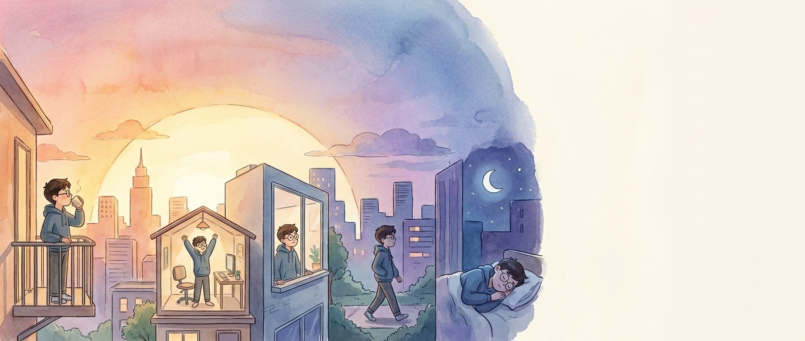
按一天的时间线走：早起晒光、白天起身、护住眼睛、下午断咖啡因。
证据 B ｜ ✅ 去做 ｜ 痛点：昼夜颠倒、晚上睡不着 ｜ 十二柱：—（节律是全书的地基）
一句话：想早睡，先早起晒太阳。
你可能也这样：周日凌晨 1 点还精神，周一早上 9 点像被拖出被窝。下决心“今晚 11 点睡”，结果躺在床上刷手机刷到 2 点。
做法：起床后 1 小时内，到户外（或开着窗的窗边）待 10–30 分钟。阴天也有效，只是多待一会儿。不用看太阳，周围的环境光就够了。
为什么：
打个比方：你身体里有一个系统时钟（大脑里的视交叉上核）。它不靠网络对时，靠的是眼睛看到的光。早晨的强光就像一次 NTP 校时，告诉时钟“现在是白天”。时钟校准后，晚上分泌“睡眠信号”褪黑素的时间也会跟着提前。
关键在亮度差：办公室灯光通常不到 500 勒克斯（lux，照度单位），户外阴天也有几千，晴天可以到十万。窗里窗外，差了几十倍。
所以，晚睡晚起的循环，破局点不在“今晚逼自己早睡”，而在“明早先把时钟拨准”。
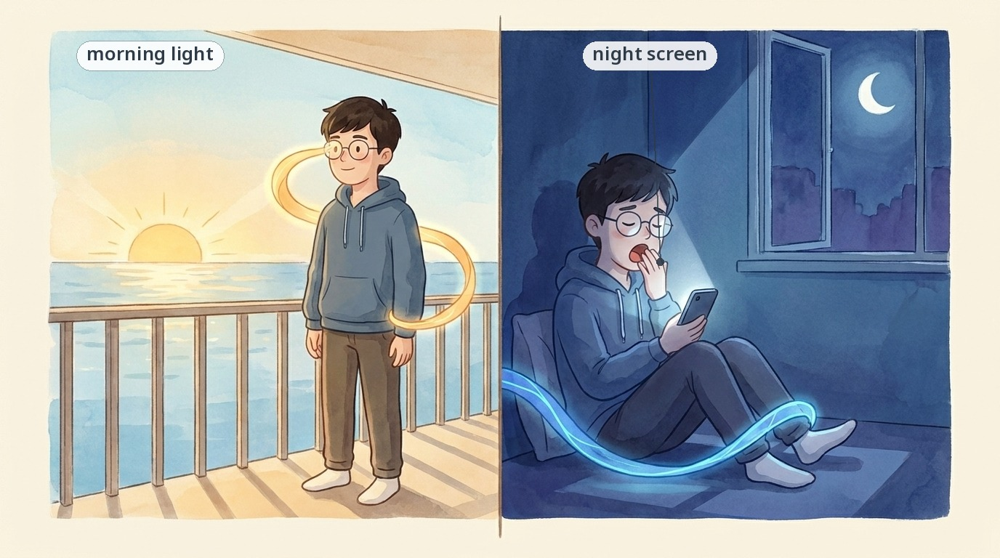
▲ 早晨的光把生物钟拨准，夜里的屏幕把它往后拖
证据有多硬（B）： - 人体对照研究：一周户外露营、只接受自然光后，参与者的褪黑素节律明显提前，和日出日落对齐（Wright 2013）。 - 实验室研究给出了光照“重置”生物钟的“剂量-效果”关系（光越亮、照越久，时钟拨得越多）（Zeitzer 2000）。这项研究测的是夜间光照，它也解释了为什么晚上要少照强光（见「睡前 1 小时屏幕宵禁」）。 - 晨间光疗是临床上使用的非药物节律干预（用于“生物钟整体往后推、想早睡也睡不着”的睡眠时相延迟）。 - 为什么不是 A：结局是褪黑素节律这类中间指标（不是寿命、疾病这种最终结果），还没有“晒晨光→更长寿”的硬终点试验。
程序员场景：把站会前的 10 分钟改成下楼买咖啡；远程办公的，把第一个会挪到阳台上开。
边界：双相情感障碍患者做光疗需遵医嘱；不要直视太阳。
笔者按：反直觉的一条：晚睡晚起的破局点不在晚上，在早晨。想早睡，先早起晒光；顺序搞反了，越努力越失眠。这是“长寿的一天”的起点。
证据 B ｜ ✅ 去做 ｜ 痛点：腰酸、饭后犯困 ｜ 十二柱：H6 营养感知
一句话：每坐 30 分钟，起来动 2 分钟。全书技术含量最低、杠杆最高的一条。
你可能也这样：一坐下来调一个 bug，抬头已经是三个小时后，腰僵、腿麻、脑子发木。晚上去健身房练了一小时，心想“今天的久坐抵消了吧”。
做法： - 设一个 30 分钟循环的静音提醒（手机、手表、番茄钟都行）。 - 提醒一响就站起来 2–3 分钟：接杯水、上个厕所、做 5 个深蹲、走到窗边看一眼远处。 - 不需要剧烈，关键是打断。
为什么：
打个比方：肌肉是全身最大的“血糖和血脂回收站”。人一坐下不动，回收站就进入待机，血里的糖和脂肪排着队却没人处理。站起来走两步，回收站立刻重新上线。
人群数据说明，久坐的伤害有两笔账： - 总时长：一项汇总了一百多万人数据的分析发现，每天久坐时间越长，死亡风险越高；只有每天中高强度运动达到大约 60–75 分钟，才能抵消这部分风险。 - 连续时长：一项用佩戴式运动记录仪客观测量、追踪近 8000 名 45 岁以上美国人的研究发现，总久坐时间越长、每次坐得越久不起身，死亡风险都越高；两样都高的人（坐得多，而且一坐就是 10 分钟以上不动），风险最高。不过，这两笔账很难完全拆开，“每次坐多久”单独有多大影响，还没有定论。
所以健身房里的一小时很好，但它补不上白天连坐三小时的那一笔账。
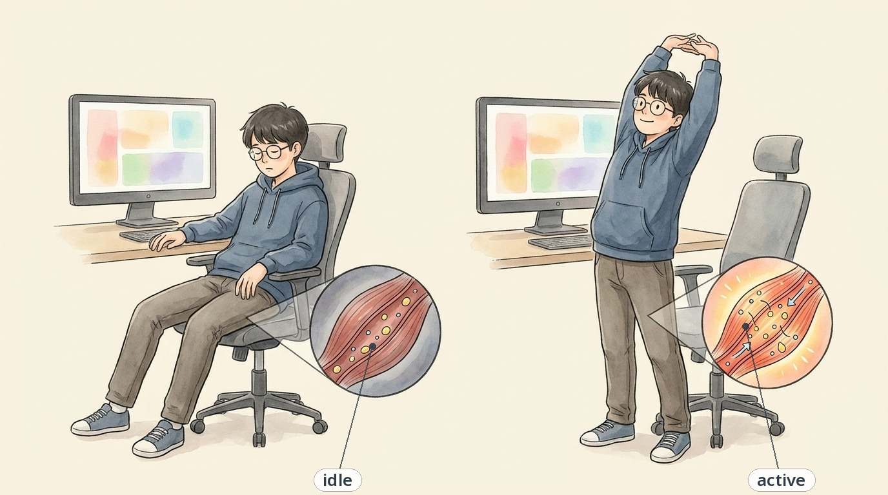
▲ 坐久了，肌肉“待机”；站起来，几分钟就重新上线
证据有多硬（B）： - 大规模人群研究（Ekelund 2016）和客观测量的队列研究（Diaz 2017）方向一致。 - 短期人体实验：用短时活动打断久坐，能降低餐后血糖和胰岛素（Dunstan 2012）。 - 为什么不是 A：都是观察性研究；“每 30 分钟起身 → 更长寿”还没有长期随机试验。
程序员场景：编译、构建、跑测试、等 CI 的时间，就是天然的起身点。把等待时间变成站立时间。
边界：动作温和就行；有体位性低血压的人，起身先在床边或椅边停几秒。
笔者按：全指南里技术含量最低的一条，也可能是杠杆率最高的一条。我见过太多人买了上万块的升降桌，然后把它降到最低，坐着用。
证据 C ｜ 🧪 可以试 ｜ 痛点：眼干、眼酸、看久了模糊 ｜ 十二柱：—
一句话：每看屏幕 20 分钟，看 6 米外的东西 20 秒，顺便用力眨几下眼。
你可能也这样：下午四点，眼睛又干又涩，盯着屏幕的字开始发虚；滴了眼药水，舒服十分钟，又回到原样。
做法： - 每 20 分钟，看 20 英尺（约 6 米）外的东西 20 秒：窗外的树、走廊尽头的墙都行。 - 同时慢慢地、完整地眨 5–10 次眼。 - 和「30 分钟起身闹钟」合并：起身、远眺、眨眼，一套动作做完。
为什么：
打个比方：看近处时，眼睛里一圈叫睫状肌的小肌肉要一直收紧，像手一直握着拳。看 6 米外的东西，这只“拳头”才能松开。
另一个问题是眨眼。眨眼像雨刷，每眨一次就把泪膜重新刷匀一遍，泪膜是盖在眼球表面的一层薄水膜。人一专注看屏幕，眨眼次数会明显减少，还常常眨不完整；泪膜蒸发得快、补得慢，眼睛就干了（TFOS 国际专家组 2023 年综述）。
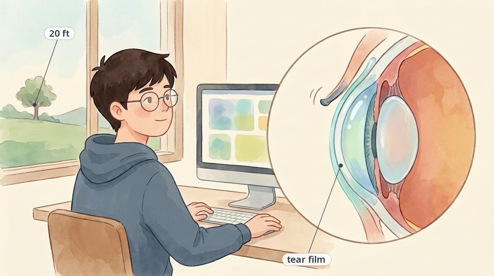
▲ 看远处，眨眨眼：给泪膜一次刷新
证据有多硬（C）： - 屏幕使用和眼干、视疲劳的关联证据充分；美国眼科学会等机构推荐 20-20-20。 - 一项 29 人的小试验：电脑上装了 20-20-20 提醒，两周后视疲劳和眼干症状都减轻了；但提醒一停，一周后效果就没了（Talens-Estarelles 2023）。 - 为什么不是 B：只有小样本、没有对照组的试验；“20 分钟、6 米、20 秒”这组数字是经验设定，没有被严格验证过。机制是对的，数字取个好记的，而且要一直做才有用。
程序员场景：给“忘记眨眼”装一个定时器。如果你已经在用番茄钟，每个番茄结束时顺便做一次。
边界：持续视疲劳、视力突然下降、看东西重影，要去看眼科，这不只是屏幕的问题。
笔者按：眨眼是被屏幕劫持的第一个本能：代码看得越入神，眨得越少，泪膜干了都没感觉。20-20-20 的本质，是给这个本能装一个外部提醒。
证据 B ｜ ✅ 去做 ｜ 痛点：明明困了却睡不着、睡了不解乏 ｜ 十二柱：—
一句话：下午 2 点以后的那杯咖啡，会一直“喝”到你半夜。
你可能也这样：下午四点来一杯美式续命，晚上十二点躺下，翻来覆去；或者“我喝完照样秒睡”，但第二天还是像没睡够。
做法： - 下午 2 点以后不再摄入咖啡因。 - 咖啡因不只在咖啡里：浓茶、奶茶、可乐、能量饮料、部分止痛药和感冒药里都有。 - 下午想提神，换成起身走一圈、晒几分钟太阳，或者喝无咖啡因咖啡。
为什么：
打个比方：大脑醒着的时候，会不断积累一种叫腺苷的分子，它就是“困意信号”。腺苷积累到一定程度，你就困了。咖啡因的长相和腺苷很像，它占住腺苷的受体，但不传递信号，就像把门铃按钮用胶带粘住：困意还在，你只是听不到门铃。
关键是它走得很慢。咖啡因的半衰期大约 5 小时，个体差异很大（大约 2–10 小时）。下午 2 点喝一杯，晚上 7 点血里还剩一半左右，半夜还剩四分之一。
实验最不给面子：2013 年的一项试验让受试者在睡前 0、3、6 小时服用 400 毫克咖啡因（大约两杯大杯美式）。结果，即使是睡前 6 小时那组，仪器测得的总睡眠时间也少了一个多小时，而受试者自己的感觉没那么明显。不过这项试验只有 12 人，剂量也偏大。
2023 年的一项 meta 分析汇总了 24 项研究：喝咖啡因平均让总睡眠时间少了约 45 分钟。按它的估算，一杯普通咖啡（约 100 毫克）至少要在睡前 8.8 小时喝完。如果你 11 点睡，那就是下午 2 点左右。
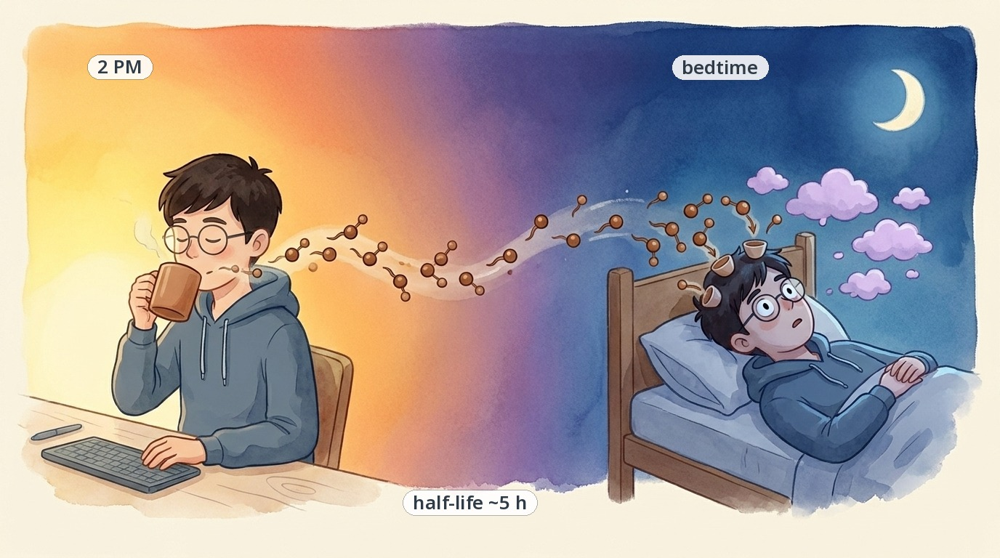
▲ 下午 2 点那杯咖啡的下半场：到了睡觉时，咖啡因还没走完
证据有多硬（B）： - 随机对照试验（Drake 2013）+ 24 项研究的 meta 分析（Gardiner 2023）+ 成熟的药理学研究（Fredholm 1999）。 - 为什么不是 A：结局是睡眠指标，不是长期健康终点；试验剂量偏高，样本也不大。
程序员场景：想靠一杯晚咖啡赶 deadline，其实是拿明天的状态换今晚的清醒，而睡眠债是复利（见「睡眠债偿还表」）。
边界：孕期咖啡因的代谢明显变慢，摄入量要遵医嘱；心律失常、焦虑症的人对咖啡因更敏感。
笔者按：我把它划成“红线”而不是“建议”，唯一的原因是：主观感觉在这件事上不可信。睡前 6 小时的咖啡照样偷走一个小时的睡眠，而当事人觉得“我代谢快，没事”。
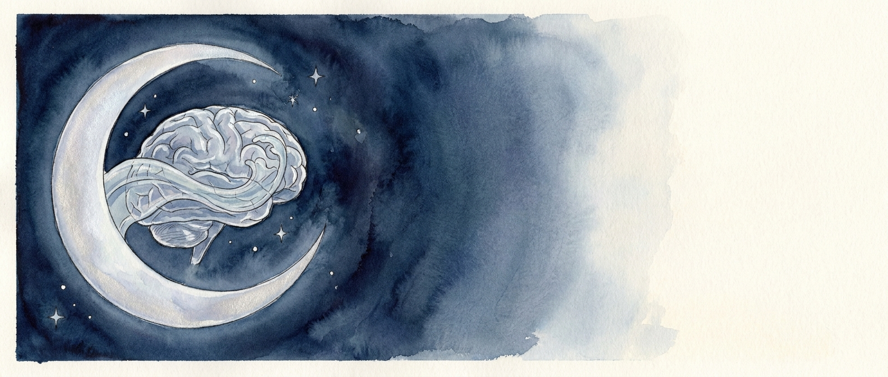
睡眠是身体的垃圾回收：熬了夜怎么还债，睡前怎么关机。再加上每天坐八小时的工位，怎么调才不伤颈、腰、手腕。
证据 B ｜ ✅ 去做 ｜ 痛点：熬夜后遗症 ｜ 十二柱：—
一句话：睡眠债分三晚慢慢还，不要周末一口气睡 12 个小时。
你可能也这样：上线那周每晚睡 5 小时，自我感觉“还行，习惯了”；到了周六一觉睡到下午 2 点，周日晚上又睡不着，周一更困。
做法：熬夜之后，按这三步还： 1. 当晚提前 30–60 分钟上床，而不是第二天睡到中午。 2. 第二天午睡不超过 20 分钟，最好在下午 3 点前。 3. 连续 3 晚正常作息，起床时间照旧，用早晨的光把时钟拨回来（见「晨光 10 分钟」）。
为什么：
打个比方：睡眠不足像内存泄漏。每晚少睡一点，就漏一点，系统一时不崩，但越来越卡。更麻烦的是，监控面板会失灵：你觉得自己“已经适应了”，其实性能还在往下掉。
实验数据很清楚：连续两周每晚只睡 6 小时，注意力测试的成绩一路下滑，到最后相当于连续通宵两晚；可受试者自己报告的困倦感，只是略有上升（Van Dongen 2003）。
还债也比欠债慢。另一项实验让受试者连续一周限制睡眠，之后每晚给足 8 小时恢复；3 晚之后，睡得最少的几组仍没回到原来的水平（Belenky 2003）。
那为什么不周末一次睡够？因为睡到下午等于把生物钟往后拨了几个小时，周日晚上睡不着，周一又欠一笔。旧债没还清，又添了一笔“时差债”。
周末补觉也不是全无用处，证据有两面： - 一项追踪 4.4 万瑞典人的研究发现，65 岁以下的人里，工作日睡得少、周末睡得长的人，死亡率和每天睡 6–7 小时的人没有差别；一直睡不到 5 小时的人，死亡率才更高（Åkerstedt 2019）。 - 但一项实验室研究发现，“工作日缺觉、周末随便睡”的模式，并没有挡住胰岛素敏感性下降（身体处理血糖的能力变差），周末之后生物钟还往后推了（Depner 2019）。
所以周末多睡一点可以，但别睡到下午；真正的解法还是工作日别欠。
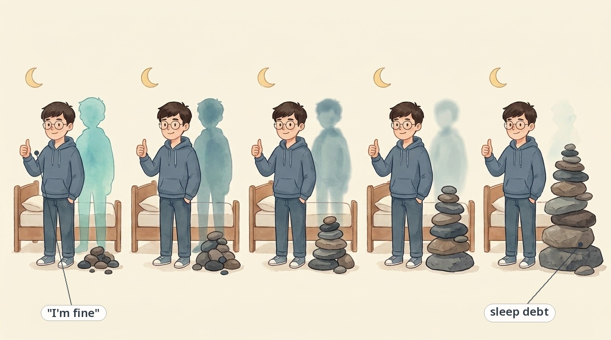
▲ 睡眠债：越欠越多，感觉越平
证据有多硬（B）： - 两项严格控制的实验室研究给出了清晰的规律：睡得越少，损伤越大，而且会累积（Van Dongen 2003；Belenky 2003）。 - 周末补觉：人群研究提示它可能抵消一部分风险（Åkerstedt 2019），但实验显示它挡不住代谢损伤（Depner 2019）。 - 分三晚还、少睡懒觉的做法，来自睡眠医学的临床共识和节律研究。 - 为什么不是 A：“三晚偿还法”本身没有做过头对头的对照试验，实验室结局也是认知测试，不是长期健康结局。
程序员场景：发版夜之后，最错误的选择就是“周末睡到下午”。正确的姿势：周五晚上早点睡，周六照常起床晒太阳，下午小睡 20 分钟。
边界：如果躺下 30 分钟以上睡不着、每周超过 3 晚、持续 3 个月，这是慢性失眠，属于疾病，要去睡眠门诊，不是自律问题。
笔者按：睡眠研究里最阴险的发现是：债越欠越多，困倦感却变平了，让人真心觉得“我还行”。在睡眠这件事上，感觉是一个失真的仪表盘，要相信记录，别相信感觉。
证据 B ｜ ✅ 去做 ｜ 痛点：入睡困难 ｜ 十二柱：—
一句话：睡前 1 小时放下手机，把入睡这件事交还给大脑。
你可能也这样：11 点上床，“刷两分钟就睡”，抬头一看 1 点了。关了灯，脑子里还在转刚才那条热帖。
做法： 1. 睡前 1 小时，手机、平板、电脑都放下；手机放到够不着的地方充电。 2. 用纸质书、播客、拉伸或洗个热水澡来填这一小时。 3. 实在做不到，至少把屏幕调到最暗，并且只看“无聊”的内容。别指望“夜间模式”：一项实验对比了开和不开 iPhone 夜间模式，睡眠没有差别（Duraccio 2021）。
为什么：
打个比方：睡觉前，大脑要做一次“优雅关机”：先降低负载，再释放褪黑素这个“该睡了”的信号。屏幕同时打断这两步。
第一，光。屏幕的光（尤其是蓝光）会告诉生物钟“现在还是白天”，压住褪黑素，把整个时钟往后推。第二，内容。信息流、消息、短视频让大脑保持兴奋，就像关机前又开了十个新进程。
一项对照实验让成年人睡前 4 小时用平板读电子书，连续 5 晚，再和读纸质书对比。结果：读平板时入睡平均晚了约 10 分钟，晚上的褪黑素被压低，生物钟往后推，第二天早上更难清醒（Chang 2015）。
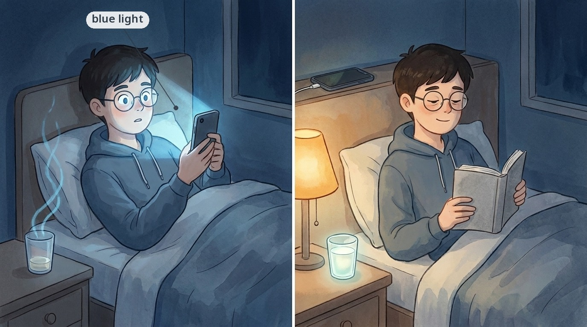
▲ 最后那小时屏幕，偷走的不止一小时
证据有多硬（B）： - 对照实验证明，睡前用发光屏幕会推迟入睡、压低褪黑素、推迟生物钟（Chang 2015）。 - 一项近万名挪威青少年的调查发现，睡前用电子设备越多，睡得越少、越难入睡（Hysing 2015）。 - 为什么不是 A：实验样本小、效应温和（10 分钟量级）；大样本数据来自青少年，而且是相关性，不能直接证明因果。
程序员场景：“躺床上刷会儿手机”是晚睡循环的最后一块拼图。手机放客厅充电，再买个最便宜的闹钟，这是性价比最高的睡眠改造。
边界：夜班和经常跨时区的人需要个性化的节律方案；严重失眠的原因往往不止屏幕，要去看医生。
笔者按：10 分钟的入睡延迟听起来不痛不痒，直到你意识到它每晚都在，而且“内容让人兴奋”的那笔账还没算进去。宵禁一小时，换回来的是整个入睡窗口。
证据 C ｜ 🧪 可以试 ｜ 痛点：熬夜止损 ｜ 十二柱：—
一句话：熬了夜，用蔬果补点维生素 C 当止损垫，但它不是熬夜许可证。
你可能也这样：通宵修完线上故障，早上买了一瓶“维 C 泡腾片”，觉得能把昨晚的伤害抵掉一点。
做法： 1. 熬夜当晚或第二天，多吃富含维生素 C 的蔬果：橙子、猕猴桃、彩椒、西兰花。一个猕猴桃加一个橙子，就够一天的量。 2. 吃不到蔬果，可以用常规剂量补充剂（每天 100–200 mg）。 3. 不要大剂量“对冲”：一天吃好几克，多出来的会被排掉，还可能伤胃。
为什么：
打个比方：熬夜是一场火灾，维生素 C 是一块防火毯，能盖住一角火苗，但房子还是在烧。
熬夜时，压力激素皮质醇升高，体内的“氧化损伤”（可以理解为细胞被锈蚀）也会增加。维生素 C 是体液里最主要的抗氧化剂之一。大鼠实验里，补维生素 C 能压住熬夜引起的皮质醇和氧化损伤升高（Olayaki 2015），还能减轻熬夜造成的记忆损伤（Mhaidat 2015）。
但要分清主次：维生素 C 管的只是氧化损伤这一小块。熬夜让人变笨、免疫力下降、代谢紊乱，这些主要伤害它都管不了。睡眠债没有化学解药，只能用睡眠还（见「睡眠债偿还表」）。
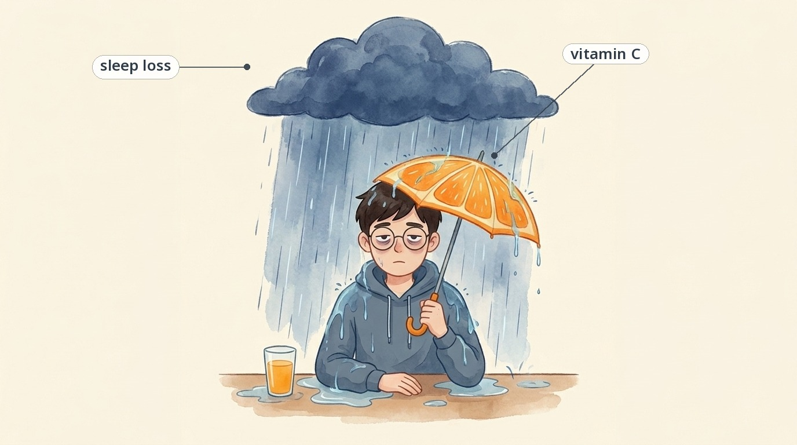
▲ 维生素 C 是止损垫，不是免死金牌
证据有多硬（C）： - 动物实验：维生素 C 能缓冲熬夜引起的皮质醇和氧化损伤升高，并减轻记忆损伤（两项大鼠研究）。 - 人体证据以综述和间接关联为主（Otocka-Kmiecik 2020）。 - 为什么不是 B：没有专门针对“熬夜人群补维生素 C”的高质量人体随机试验。
程序员场景：发版夜的“止损三件套”：吃点蔬果补维生素 C，当晚提前睡（见「睡眠债偿还表」），第二天早上出门晒太阳（见「晨光 10 分钟」）。三件套能让你少受点罪，但债还是要还。
边界：每天超过 2 克（中国和美国设定的可耐受最高摄入量）容易引起腹泻、胃不适；长期大剂量与肾结石风险相关。有肾结石病史的人不要自行补大剂量。常上夜班的人，重点是节律管理（见「睡前 1 小时屏幕宵禁」），补剂只是配角。
笔者按：这是本指南第一个“救火”条目。写它不是为了给熬夜发许可证：维生素 C 能缓冲的只有氧化损伤这一小块，脑力和睡眠的欠账一分都免不了。所以它排在「睡眠债偿还表」「睡前 1 小时屏幕宵禁」后面：前面两条做到了，才轮得到它。
证据 B ｜ ✅ 去做 ｜ 痛点：脖子酸、腰疼、手腕麻 ｜ 十二柱：—
一句话：屏幕抬高、腰后垫住、手腕放平，三处调对，颈、腰、腕少受罪。
你可能也这样：抱着笔记本在沙发上、床上、咖啡馆里写代码，一天下来脖子像灌了铅；手腕偶尔发麻，甩一甩又好了。
做法： 1. 屏幕：上沿和眼睛平齐，距离约一臂（50–70 厘米）。用笔记本办公，就加一个支架，再配外接键盘和鼠标。 2. 手腕：手肘弯成 90–100 度，手腕保持平直，不要往上翘。 3. 腰：臀部坐到椅子最里面，腰后垫一个靠枕或用椅子的腰托。
为什么：
打个比方：成年人的头大约 5 公斤，相当于一个保龄球。头摆正时，颈椎只扛这 5 公斤；头往前低，力臂变长，颈椎扛的力就像用一根杆子挑着保龄球，越往前越沉。一项力学模型估算，低头 15 度时颈椎承受的力大约是 12 公斤，低到 60 度就接近 27 公斤（Hansraj 2014）。这是计算模型，不是在人身上实测的。
腰椎也一样。经典的椎间盘压力测量发现：坐着比站着压力高约四成，坐着再往前探身，压力接近站立时的两倍（Nachemson 1981）。不过 1999 年用更精确的传感器复测，放松坐着的压力和站着差不多，往前探身才明显升高（Wilke 1999）。所以真正要避免的是“坐着往前探”，不是坐本身。
手腕往上翘时，腕管里的压力升高，压迫正中神经，这是腕管综合征的直接机制。
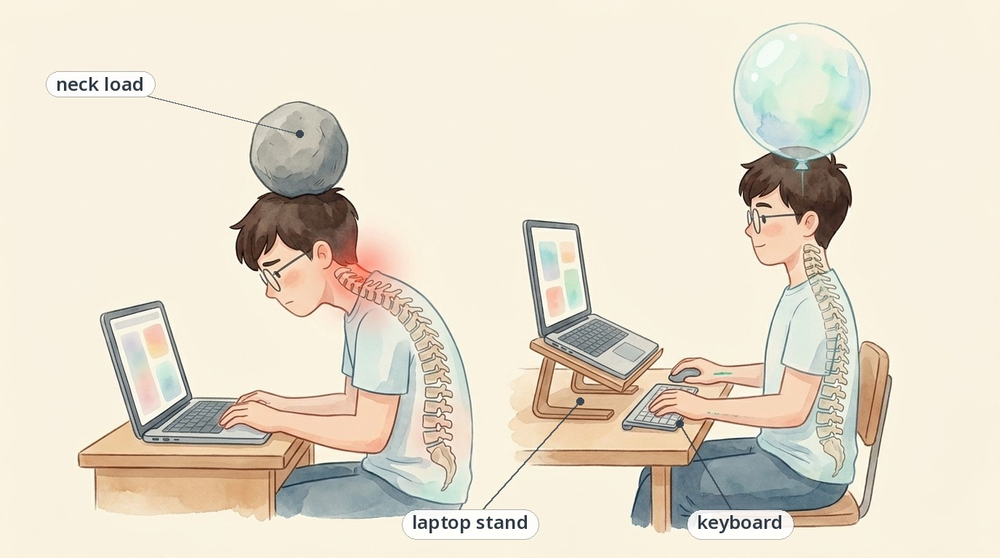
▲ 头每低一寸，脖子多扛几斤：支架 + 外接键盘
证据有多硬（B）： - 生物力学证据扎实（力学测量和模型）。 - 但“姿势不好就一定颈痛”没那么确定：一项 150 名 18–21 岁年轻人的研究，没发现低头发消息的姿势和颈痛有关联（Damasceno 2018）。疼不疼，还和坐多久、动得多不多有关，所以要和「30 分钟起身闹钟」一起做。 - 为什么不是 A：“工位改造能预防腕管综合征、颈椎病”的随机试验结果并不一致。
程序员场景：笔记本支架 + 外接键盘鼠标，几百块钱同时解决颈和腕两个问题，这是性价比最高的工位改造。
边界：已经出现持续手麻（尤其是夜里麻醒）、握力下降，要去医院做神经检查。工位改造救不了已经受损的神经。
笔者按：笔记本是按“偶尔移动使用”设计的，每天八小时用它办公，它就是一件刑具。外接键盘加支架，是我推荐过的性价比最高的改造，没有之一。
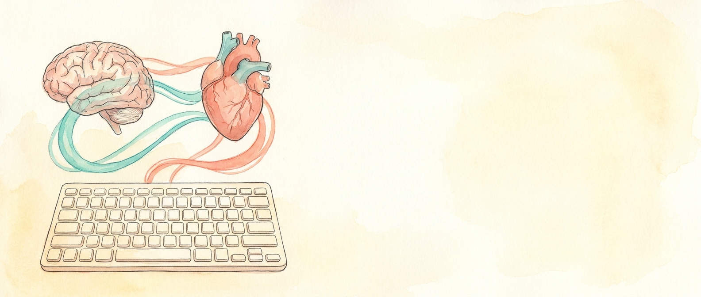
心流、工作记忆、节律、冥想：程序员最贵的生产资料是专注力，怎么保护它。
证据 C ｜ 🧪 可以试 ｜ 痛点：被打断、切换成本 ｜ 十二柱：—
一句话：被打断前留一行“恢复注释”，给未来的自己留个断点。
你可能也这样：刚把一个复杂的 bug 理出头绪，同事拍了下肩膀：“有空吗，问个小事。”五分钟后回来，盯着屏幕想：“我刚才在干嘛来着？”
做法：
1. 划出免打扰时段：在日历上占一块 2 小时的“专注时间”，把即时通讯状态改成“勿扰”。
2. 留恢复注释：被打断前，花 10 秒写一行注释，例如 // TODO 下一步：检查 token 过期时是否重试。回来先读这一行。
3. 收工前也留一行，第二天早上直接从这里开始。
为什么：
心流，就是全神贯注、忘了时间、代码像自己流出来的那种状态。它最怕的就是被打断。
打个比方：你脑子里正在跑的任务，就像调试器里的一个进程，变量、调用栈、下一步的计划都在内存里。被打断就像进程被杀掉，内存清空。恢复注释就是一个断点加快照：把最关键的上下文写到磁盘上，回来时不用从头重建。
软件工程研究证实了这个成本。一项研究分析了近百名程序员的上万次编程会话，发现程序员的工作被切成很多短会话，被打断后往往要过一阵才能重新开始改代码。问卷里，程序员也普遍靠留笔记、回看最近改过的地方来找回思路（Parnin & Rugaber 2011）。
被打断的代价也不全写在进度上。一项办公室任务实验发现，被打断的人完成得反而更快，质量也没差，因为人会加速来补；代价是压力更大、更挫败、更觉得赶（Mark 2008）。
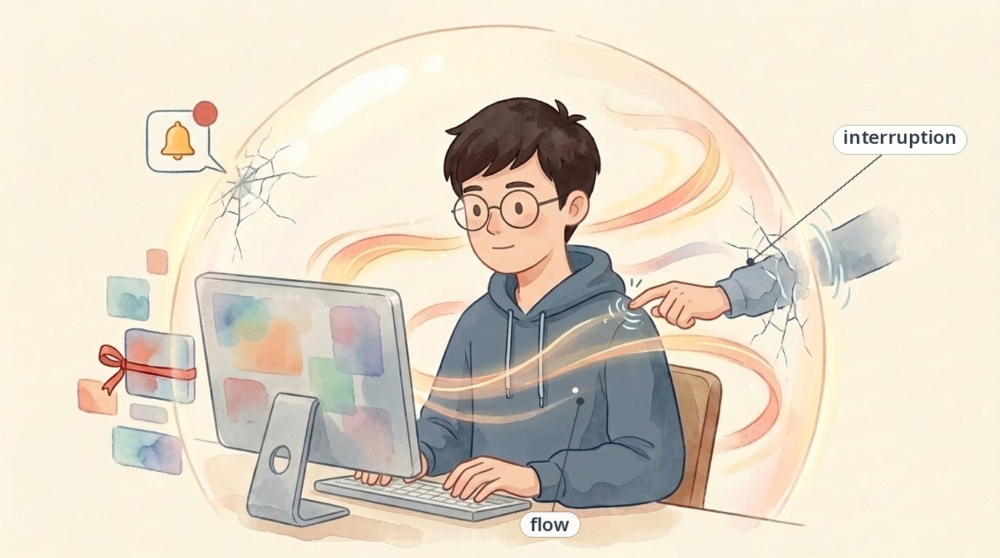
▲ 心流与中断：留一个“断点”，回来就能续上
证据有多硬（C）： - 软件工程的实证研究（日志分析 + 问卷）：中断成本真实存在，程序员普遍靠留标记来恢复（Parnin & Rugaber 2011）。 - 办公室任务实验：被打断会让人压力更大（Mark 2008）。 - 认知实验支持“短暂、事先知道的切换”有助于保持注意力（Ariga 2011）。 - 为什么不是 B：没有“留恢复注释 vs 不留”的随机对照试验，结局也是工作效率，不是健康。
程序员场景：看到产品经理朝你走来，先 Cmd+S，再写一行恢复注释。分工也很清楚：平常的杂事用番茄钟打节奏（见「番茄钟的生理学」），深度任务就护住心流。
边界：心流不是所有任务的最佳状态，代码评审、排查疑难问题有时更需要发散思维。也别把“护心流”变成“谁都别找我”，团队协作也是工作。
笔者按：被打断后“我在干嘛来着”的那十秒钟茫然，就是重建上下文在计费。恢复注释是全指南最便宜的一条习惯：一行注释，换回一次快速续传。
证据 C ｜ 🧪 可以试 ｜ 痛点：脑子装不下、认知超载 ｜ 十二柱：—
一句话：别在脑子里存东西，写下来不是偷懒，是扩容。
你可能也这样：脑子里同时挂着三个需求、两个 bug、一个下午的会，还有“记得给妈回电话”。哪件都没忘，但哪件都做不好。
做法：把“记在脑子里”改成“记在外面”： 1. 写代码前，先写几行伪代码或步骤。 2. 所有待办都进一个清单（工具不重要，一个就行）。 3. 被打断前留恢复注释（见「写代码与心流」）。 4. 桌上常备一张草稿纸，想到什么先扔上去。
为什么：
打个比方：大脑的工作记忆（临时记着、正在处理的那几样东西）像 CPU 的寄存器，很快，但很少，一次只能放几样东西。你硬塞进去十件事，它就得不停地换进换出，真正用来“算”的空间就没了。把东西写下来，就是把数据从寄存器挪到硬盘上，寄存器腾出来专心计算。
认知科学把这叫“认知卸载”。一篇综述总结了大量实验：人们把“将来要做的事”交给外部提醒（便签、日历、提醒），记得更牢，也更省力（Gilbert 2023）。
反过来，想靠“练脑”给寄存器扩容，基本没戏。一项汇总了 87 篇研究的分析发现，工作记忆训练只会让你在训练的那个游戏上变强，换到别的任务（比如推理、智力测试）就没有效果了（Melby-Lervåg 2016）。
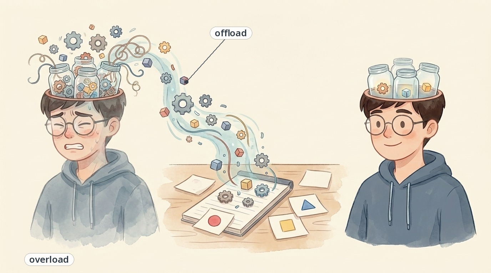
▲ 脑内内存管理：写下来，就是扩容
证据有多硬（C）： - 认知卸载有系统综述支持，但多数是实验室任务（Gilbert 2023）。 - “脑训练练不到别的能力上”有 meta 分析支持（Melby-Lervåg 2016）。 - 为什么不是 B：没有“写清单”对长期认知或健康影响的随机试验。
程序员场景：你早就在这么做了：注释、TODO、白板。这一条只是告诉你，这个直觉有认知科学撑腰，而且比买脑训练 App 靠谱。
边界：卸载不等于不动脑。深入理解一段代码，仍然要把它装进脑子里想。外化的是“记住”，不是“思考”。
笔者按：“写下来就是扩容”，工程师对外部存储的理解比谁都深。倒是那些卖脑训练 App 的，该读读那篇 meta 分析。省下订阅费，买一沓好草稿纸。
证据 C ｜ 🧪 可以试 ｜ 痛点：注意力涣散 ｜ 十二柱：—
一句话：番茄钟的本质是节律：专注一阵，恢复一下。25 分钟不是魔法数字。
你可能也这样：一坐三小时，最后一小时其实在反复读同一段日志；或者反过来，一会儿看消息一会儿刷网页，一上午什么都没干成。
做法： 1. 专注 25 分钟，休息 5 分钟，算一个周期；4 个周期后休息久一点。 2. 休息时离开屏幕：看远处、眨眨眼（见「20-20-20 用眼法则」），站起来走两步（见「30 分钟起身闹钟」）。 3. 数字可以调。写复杂代码时可以改成 50 + 10，关键是有节奏地专注和恢复。
为什么：
打个比方：注意力像一块手机电池，持续高负载会掉电、发热。番茄钟不是让电池变大，而是定时插一下充电器。
实验发现，长时间盯着一件单调的事，注意力会随时间下滑；而中间偶尔短暂地切换一下，就能防止这种下滑（Ariga 2011）。这就是“专注—恢复”循环的科学依据。
但要诚实：“25 分钟”这个数字没有生理学来源。它来自 Francesco Cirillo 上世纪 80 年代读大学时用的番茄形厨房计时器，是个人习惯，不是实验推导。
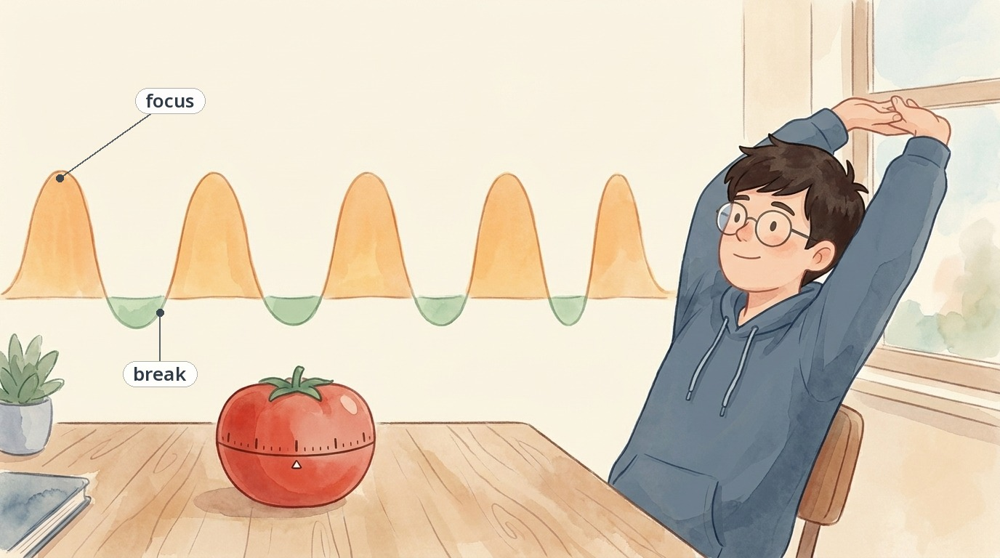
▲ 专注一阵，休息一下：节律比数字重要
证据有多硬（C）： - 短暂休息有助于保持注意力，有实验支持（Ariga 2011）。 - 番茄钟本身只有几项大学生的小实验，结果不一： - 一项发现，固定的“24 分钟学习 + 6 分钟休息”比想停再停更不累、更专注，完成量一样（Biwer 2023，87 人）。 - 另两项发现，自己决定何时休息一样好，甚至心情更好（Smits 2025，94 人；Göksu 2026，176 人）。 - 三项研究里，学习效果都没有差别。 - 为什么不是 B：“25 分钟最优”从来没有被直接验证过；仅有的几项实验样本小、只做了一两天，结论还互相打架。
程序员场景：把番茄钟当成“强制暂停协议”：铃一响，抬头、眨眼、起身，三件事一次做完。它最大的价值在节律，不在数字。
边界：深度编码时被铃声打断也有成本（见「写代码与心流」）。进入心流时，可以把周期拉长，不必教条。
笔者按：我喜欢这一条的诚实：“25 分钟”是一个意大利大学生的个人约定，不是生理学。方法可以工程化，但把工程约定当成自然规律，正是这本指南要反复拆穿的事。
证据 B ｜ ✅ 去做 ｜ 痛点：压力、焦虑 ｜ 十二柱：H2 端粒 · H11 炎症
一句话：每天 10 分钟数呼吸；走神后拉回来，这个动作本身就是训练。
你可能也这样：下载过冥想 App，坐了两分钟，脑子里全是需求文档和没回的消息，觉得“我不适合冥想”，就删了。
做法： 1. 每天 10 分钟，坐直，闭眼或者看着地面。 2. 注意力放在呼吸上：吸气数 1，呼气数 2，数到 10 再从 1 开始。 3. 走神了很正常。发现走神，就把注意力拉回呼吸。把注意力拉回来的这个动作，就是训练本身。
为什么：
打个比方：冥想不是“清空大脑”，而是在练习一个函数：return_to_breath()。每走神一次、拉回一次，就是调用一次。调用得越多，这个函数跑得越快。你以为“总走神”说明失败，其实那正是在练。
这个练习能实实在在地减轻焦虑。一项汇总了 47 项随机试验、3500 多人的分析发现，正念冥想课程对焦虑、抑郁和疼痛有小到中等程度的改善（Goyal 2014）。专门针对职场的 23 项研究汇总也发现，正念训练能降低工作压力（Bartlett 2019）。
要说清楚的是：这些试验里的课程大多是 8 周左右，每周上课，每天还要练习，加起来远不止 10 分钟。每天 10 分钟是好坚持的入门量，效果多半比试验里小。
在分子层面也有一些线索：一项汇总了 4 项小试验、共 190 人的分析发现，冥想与端粒酶（帮助维护染色体末端“保护帽”的酶）活性升高相关（Schutte 2014）。注意力和炎症之间的联系，见「注意力能调节炎症」。
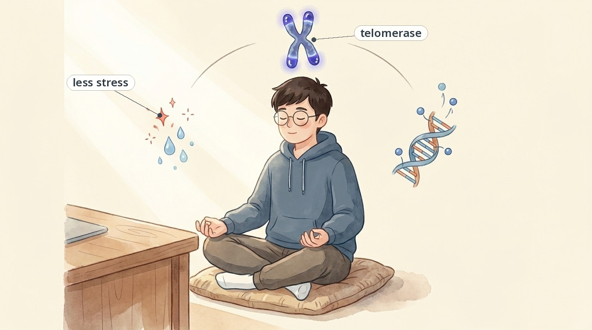
▲ 冥想十分钟：先减压力，端粒酶只是线索
证据有多硬（B）： - 改善焦虑、抑郁和压力：多项随机试验与 meta 分析（Goyal 2014；Bartlett 2019）。 - 分子层（端粒酶）：小样本汇总，信号级（Schutte 2014）。 - 为什么不是 A：改善幅度中等偏小；冥想很难做“假冥想”对照（不像药片可以换成安慰剂），难以完全排除“相信有用”带来的效果；试验课程也比每天 10 分钟重得多。
程序员场景：等编译、两个会之间、睡前，10 分钟不比一集短视频长。
边界：冥想不替代精神科治疗。已确诊抑郁症、焦虑症的人，以专业治疗为主，冥想是辅助。少数人在长时间、高强度冥想中会感到不适，出现这种情况就停下来。
笔者按：这一条的心理证据最扎实，分子证据还在早期。哪怕只看“少焦虑一点”，每天 10 分钟也很划算；端粒酶算是附赠的线索，不是买它的理由。
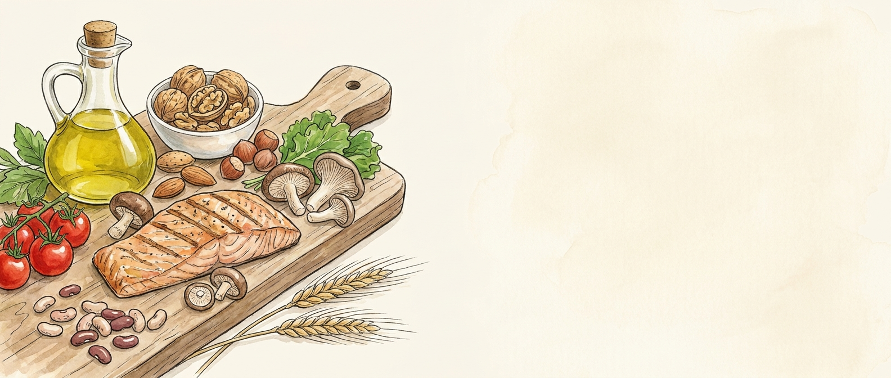
坚果、鱼油、DHA、亚精胺、GlyNAC：哪些值得放上餐桌，哪些补剂可以省下，哪些只是写给父母的。
证据 B ｜ ✅ 去做 ｜ 痛点：每天的零食 ｜ 十二柱：H6 营养感知
一句话：每天一小把无盐坚果，大约 28 克，是最好的零食之一。
你可能也这样：下午 4 点，抽屉里的薯片、饼干和辣条在召唤你。吃完更饿，还犯困。
做法： 1. 每天一小把，约 28 克，差不多是一个手心能托住的量。 2. 选原味、无盐、无糖、不油炸的。 3. 核桃、杏仁、开心果、榛子换着吃。
为什么：
打个比方：薯片像一次性的高电流，让血糖冲上去又掉下来；坚果像一块稳定的电池，脂肪、蛋白质和纤维让能量慢慢释放。
大规模的人群数据很一致。一项汇总了 18 项长期追踪研究（先记录饮食、再看多年后谁去世）的分析发现，坚果吃得最多的人，比吃得最少的人全因死亡风险低约两成（Chen 2017）。另一项汇总按剂量算：每天多吃 28 克坚果，全因死亡风险低约 22%，冠心病风险也更低；好处大多在每天一把以内就到顶了（Aune 2016）。
随机试验也有一点支持：在地中海饮食的大型试验里，每天加一把坚果的那一组，心梗、中风这类事件比对照组少（见「以植物为主的地中海式饮食」）。
坚果里的好东西不止一样：不饱和脂肪酸有助于改善血脂，膳食纤维喂养肠道菌群，还有维生素 E、镁和多酚。
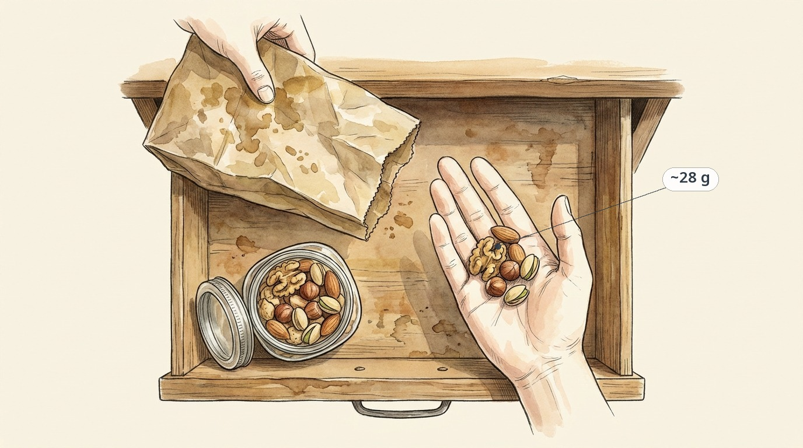
▲ 坚果一把：把薯片换成一小把无盐坚果
证据有多硬（B）： - 多项长期追踪研究和 meta 分析，方向一致；吃得越多风险越低，到一把左右就到顶（Chen 2017；Aune 2016）。 - 地中海饮食随机试验里，加坚果组心血管事件更少。 - 为什么不是 A：主要证据是观察性研究，吃坚果的人可能本来就更注意健康，这种干扰无法完全排除；随机试验里，坚果是和整套地中海饮食一起吃的，很难单独算出坚果的功劳。
程序员场景：把工位抽屉里的薯片换成一罐无盐混合坚果，再配一个小量勺。每天一勺，不要边写代码边抓，一抓就是半罐。
边界：坚果过敏者必须严格避开。盐焗、蜂蜜、琥珀（裹糖）、油炸的“坚果零食”不算数。小孩吃整粒坚果有呛噎风险。
笔者按：全书最好执行的一条，就是把薯片换成坚果。每天一把，混着吃，别一次吃掉半罐。“一小把”不是我的保守，它就是证据里的剂量。
证据 B（大型 RCT 阴性）｜ 食补 🧪；补剂 💸 ｜ 痛点：护眼补剂 ｜ 十二柱：—
一句话：干眼可以多吃深海鱼；但最大的鱼油试验是阴性的，别专门花钱买补剂。
你可能也这样：眼睛干涩，网上一搜“护眼”，买了一大瓶深海鱼油，吃了两个月，感觉好像有用，又好像没用。
做法： 1. 先做免费的：屏幕前多眨眼，每 20 分钟看一次远处（见「20-20-20 用眼法则」）。 2. 食补：每周吃两次深海鱼（三文鱼、鲭鱼、沙丁鱼）。 3. 不建议专门买鱼油治干眼。已经在吃的，3 个月没感觉就停，不要加量。 4. 干眼严重，去眼科，那里有真正有效的治疗。
为什么：
打个比方：鱼油里的 Omega-3（EPA 和 DHA）像一种“消防员”，能平息炎症。干眼和眼表的慢性炎症有关，所以“吃鱼油护眼”听起来很合理。
但听起来合理，不等于真的有用。一些小型试验和汇总分析看到了改善（Wang 2023）。可是规模最大、设计最严格的 DREAM 试验，让 535 名中重度干眼患者每天吃 3000 毫克 EPA + DHA，连续 12 个月。结果，他们和吃橄榄油“安慰剂”的人改善程度一样（DREAM 2018）。针对“电脑视觉综合征”的各种干预，系统综述也认为证据有限（Singh 2022）。
当小试验和大试验打架时，一般以大试验为准。
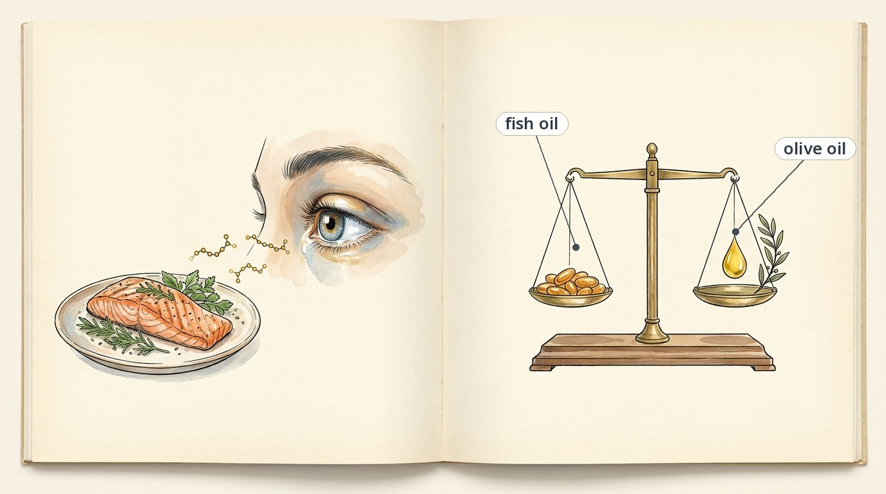
▲ Omega-3 与干眼：吃鱼可以；大型试验里，鱼油和橄榄油安慰剂打平
证据有多硬（B，阴性）： - 最大、最严格的随机试验是阴性（DREAM 2018）。 - 小样本试验和 meta 分析偏阳性，证据分裂（Wang 2023；Singh 2022）。 - 结论：吃鱼可以试；为了干眼专门买鱼油，别花这个钱。
程序员场景：很多人的顺序是：眼药水 → 鱼油 → 眨眼提醒。应该反过来：先眨眼和看远处，再吃鱼，最后才考虑别的。
边界：高剂量鱼油会增加出血倾向，正在吃抗凝药的人要先问医生；做手术前要告诉医生。
笔者按：这是全指南证据最“打架”的一条，我故意留着它。证据分裂时怎么诚实地呈现，本身就是这套分级体系存在的意义。
证据 C ｜ 📖 了解即可（吃鱼可以；为护脑专门买补剂 💸） ｜ 痛点：基因 × 营养 ｜ 十二柱：H1 基因组
一句话：APOE4 携带者的大脑“烧”DHA 更快，但多补 DHA 没换来更好的认知，吃鱼就够了。
你可能也这样：做了个基因检测，报告上写着“APOE4 携带者，阿尔茨海默病风险升高”，当晚就在网上下单了三瓶高剂量 DHA。
做法： 1. 不用为这个基因焦虑，也不用专门去测。 2. 不管是不是携带者，都把本指南的基本功做扎实：运动（见「Zone 2 快走」）、睡眠（见「睡够 7 小时左右」）、管住血压（见「知道自己的血压」）。 3. 每周吃两次深海鱼。 4. 为了护脑专门买高剂量 DHA 补剂，目前没有证据支持。
为什么：
先说 APOE。它是一种帮身体搬运脂肪的蛋白，有几种“型号”，其中 APOE4 是阿尔茨海默病最常见的遗传风险因素：带的份数越多，风险越高、发病越早（Corder 1993）。
DHA 是大脑里含量最高的 Omega-3 脂肪酸。一项 PET 研究（一种能看到分子在体内去向的扫描）用带标记的 DHA 追踪它进入大脑的过程。结果发现，APOE4 携带者的大脑并不是“吃不进”DHA，反而在部分脑区摄取得更多（约高 16%）。研究者认为这说明他们的大脑消耗 DHA 更快（Yassine 2017）。
打个比方：两台电脑都能正常装油，但 APOE4 那台“油耗”更高。
那多补一点，能不能把消耗补回来？2026 年发表的一项随机对照试验给出了答案：365 名 55–80 岁、平时 DHA 吃得少、有痴呆风险的老人，每天吃 2 克 DHA，持续 24 个月。脑脊液里的 DHA 确实升高了，而且携带者和非携带者升得一样多；但认知和脑体积都没有比安慰剂组更好（Yassine 2026）。
不过要说公道话：这项试验的主要目标是看 DHA 能不能进入大脑，认知和脑体积只是次要指标；中途又赶上新冠，38% 的人没有坚持到最后。所以它不能证明“DHA 一定没用”，只能说“目前没有看到用处”。
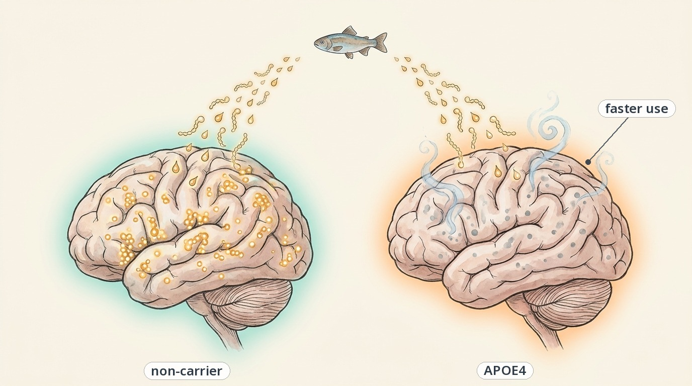
▲ APOE4 与长链脂肪酸：两个大脑都能吸收 DHA，APOE4 携带者的大脑消耗得更快
证据有多硬（C）： - APOE4 增加阿尔茨海默病风险：经典遗传学研究，结论稳固（Corder 1993）。 - APOE4 大脑消耗 DHA 更快：一项 22 人的 PET 研究，属于探索性证据（Yassine 2017）。 - 高剂量 DHA 补 2 年：随机对照试验，认知和脑体积无获益，但这两项是次要指标，脱落率也高（Yassine 2026）。 - 为什么只是“了解即可”：机制有意思，但目前唯一的干预试验是阴性的。
程序员场景：这一条最大的用处是给你装一个“补剂广告检测器”：看到“XX 能进入大脑”，先问一句“然后呢，认知变好了吗？”
边界：基因不等于命运，大多数 APOE4 携带者一辈子不会得阿尔茨海默病，可改变的生活方式因素很多。APOE 检测会带来心理压力，也可能涉及保险问题，想测的话，先找遗传咨询。
笔者按：我原本把这一条当成“精准营养”的预告片，核对完最新试验后改了口：APOE4 的大脑确实更“耗油”，但多加油并没有让它跑得更好。这正是营养科学里最常见、也最容易被广告跳过的一步。吃鱼就好，钱留着买跑鞋。
证据 C ｜ 🧪 食补可以试；补剂 💸 ｜ 痛点：想激活自噬 ｜ 十二柱：H5 自噬
一句话：亚精胺从小麦胚芽、纳豆、奶酪里吃就好；补剂的人体试验结果并不亮眼。
你可能也这样：在短视频里刷到“延寿神物亚精胺，激活细胞自噬，逆转衰老”，一瓶好几百，犹豫要不要买。
做法： 1. 食补优先：小麦胚芽（撒在燕麦、酸奶里）、纳豆、陈年奶酪、蘑菇、豆类。 2. 补剂暂时不推荐。人体试验的结果目前还不支持花这个钱。
为什么：
先说自噬。打个比方：细胞里也会堆积“垃圾”，比如坏掉的蛋白和老化的线粒体。自噬就是细胞的垃圾回收机制，把垃圾拆开、回收再利用。年纪越大，回收越慢。
亚精胺是一种天然存在于食物里的小分子，能启动这套回收机制。在酵母、线虫、果蝇和小鼠身上，补亚精胺都能延长寿命，这部分证据相当扎实；小鼠实验里，在饮水里加亚精胺，寿命延长、心脏也更好（Eisenberg 2016）。
但到了人身上，结果平淡。一项随机对照试验让 100 名担心自己记忆力变差的老人，连续 12 个月补充小麦胚芽来源的亚精胺。结果主要结局（记忆力）没有改善，只在一些探索性指标（言语记忆、炎症信号）上看到苗头（Schwarz 2022）。另一项试验给老年男性每天吃 40 毫克亚精胺，血液里的多胺（亚精胺所属的一类分子）水平几乎没变（Keohane 2024），说明“吃进去”和“到达身体”之间还隔着一段距离。
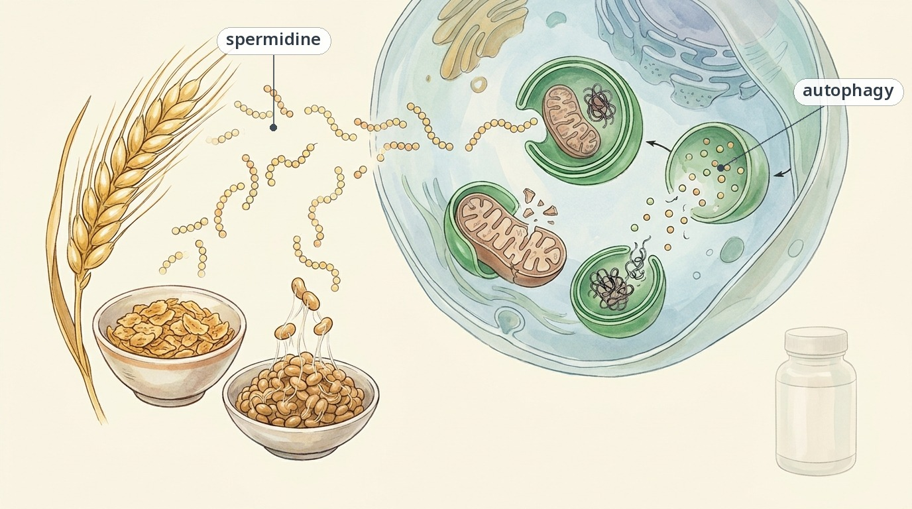
▲ 食物里的亚精胺，能启动细胞的垃圾回收（自噬）
证据有多硬（C）： - 机制和动物延寿证据强（Eisenberg 2016）。 - 人体随机试验：主要结局阴性，只有探索性信号（Schwarz 2022）；40 mg 补充对血液多胺影响很小（Keohane 2024）。 - 为什么不是 B：人体试验少、规模小、主要结局没有达到。
程序员场景：早餐的燕麦里加两勺小麦胚芽，成本很低，顺便多了维生素 E 和纤维。它和「甘麦大枣汤与小麦胚芽」说的是同一颗麦粒。
边界：补剂的剂量和长期安全性还没有定论；孕期、哺乳期和正在治疗肿瘤的人，不要自行补充。小麦胚芽含麸质，乳糜泻（一种对麸质过敏的肠道病）患者要避开。
笔者按：亚精胺是“动物数据很漂亮，人体数据很平淡”的典型。食物里吃，零风险；补剂，等更大的试验。别为一个还没在人身上兑现的故事付溢价。
证据 C ｜ 📖 了解即可（写给父母） ｜ 痛点：老年补剂组合 ｜ 十二柱：H7 线粒体
一句话：GlyNAC（甘氨酸 + NAC）是写给父母看的一条，年轻人不用急。
你可能也这样：爸妈的微信群里转来一篇“抗衰老新组合”，问你：“这个靠谱吗？要不要给我们买？”
做法： 1. 这一条主要是帮你回答父母的问题。 2. 年轻人身体里的谷胱甘肽一般不缺，不需要补。 3. 父母想试，先让医生或药师看看他们正在吃的药，再决定。
为什么：
先说谷胱甘肽。打个比方：它是细胞里的“灭火器”，专门处理线粒体（细胞的发电站）产生的“火星”，也就是氧化损伤。年纪大了，灭火器里的药剂会变少。
谷胱甘肽由三种原料组成，其中甘氨酸和半胱氨酸在老年人身上常常不够。GlyNAC 就是同时补上这两种原料：甘氨酸，加上能变成半胱氨酸的 NAC（N-乙酰半胱氨酸）。
美国贝勒医学院的一个团队做了一系列研究：
结果方向一致：补充后，老人的谷胱甘肽水平、氧化损伤、线粒体功能、体能等多项指标都有改善。
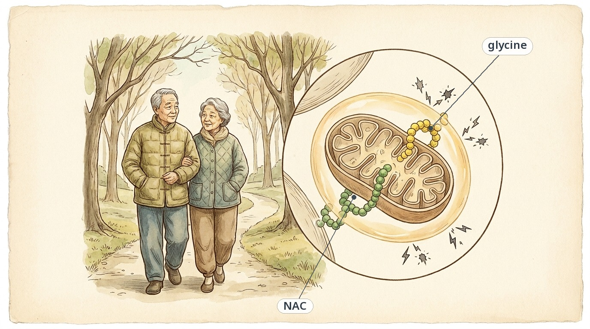
▲ GlyNAC：甘氨酸 + NAC，为线粒体补上谷胱甘肽护盾
证据有多硬（C）： - 三项研究方向一致，其中有一项随机对照试验（Kumar 2023）。 - 为什么不是 B：全部来自同一个团队、同一个中心，样本都只有几十人甚至更少；第一项研究的对象是老年 HIV 感染者；还需要其他团队独立重复。
程序员场景：父母的补剂清单里，GlyNAC 的证据比大多数“抗衰网红产品”扎实一些。但“扎实一些”不等于“已经证实”，帮他们先问医生。
边界：只有老年人的数据。NAC 可能和某些药物（例如硝酸甘油）相互作用，有哮喘的人也要谨慎，用之前请药师审核。
笔者按：这一条不是为码农自己写的，是为你爸妈写的。贝勒团队的系列研究方向一致，但还缺独立复制。我的建议是：了解它，能回答父母的问题；真要吃，先过医生那一关。
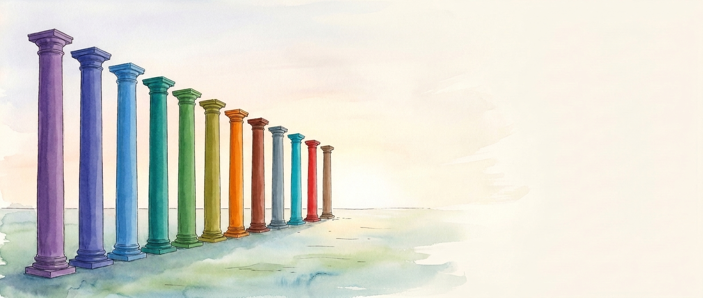
本指南的科学骨架，是 2023 年 Cell《Hallmarks of Aging》提出的十二大衰老标志。每一节建议，最终都对应得上某一根柱子。
López-Otín C, Blasco MA, Partridge L, et al. Hallmarks of aging: An expanding universe. Cell. 2023;186(2):243-278. (PMID: 36599349)
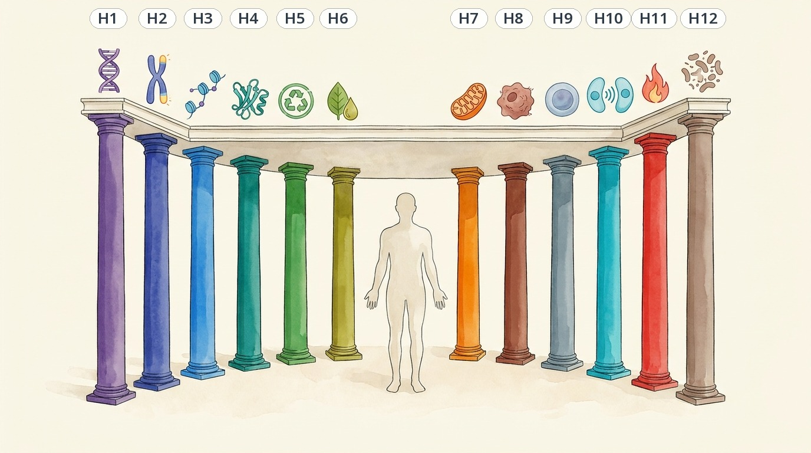
▲ 长寿十二柱：十二种衰老机制，每根柱子一个固定颜色，全书沿用
| 柱 | 衰老标志 | 对应小节 |
|---|---|---|
| H1 | 基因组不稳定 | 「学新东西时，大脑会剪断自己的 DNA」「情绪与基因组稳定」「APOE4 与长链脂肪酸」 |
| H2 | 端粒损耗 | 「情绪与基因组稳定」「冥想十分钟」（端粒酶，信号级） |
| H3 | 表观遗传改变 | 「甲基化时钟」 |
| H4 | 蛋白稳态丧失 | 「八段锦与筋」（映射级） |
| H5 | 自噬失能 | 「亚精胺与小麦胚芽」「甘麦大枣汤与小麦胚芽」 |
| H6 | 营养感知失调 | 「坚果一把」「醋与乙酸」「30 分钟起身闹钟」 |
| H7 | 线粒体功能障碍 | 「Zone 2 快走」「阳气与线粒体」「麦角硫因与蘑菇」「GlyNAC」 |
| H8 | 细胞衰老 | 「情绪与基因组稳定」（慢性压力与 p16 衰老细胞） |
| H9 | 干细胞耗竭 | 暂时没有生活方式层面的证据抓手，诚实留白 |
| H10 | 细胞间通讯改变 | 「面颈部淋巴按摩」（脑—淋巴引流）「注意力能调节炎症」（神经—免疫对话）「40Hz 声光节拍」 |
| H11 | 慢性炎症 | 「麦角硫因与蘑菇」「甘麦大枣汤与小麦胚芽」「NAC 与化痰」「冥想十分钟」 |
| H12 | 菌群失调 | 「醋与乙酸」（短链脂肪酸路径） |
晨光、睡眠、用眼、工位、专注这些小节，没有对应某一根柱子。它们不直接作用于某个分子机制，而是所有柱子共同的地基：节律乱了、睡眠欠了，哪根柱子都站不稳。
十二根柱子，十一根有抓手，一根诚实留白。等证据走到那一步，我们再说到那一步。
📖 延伸阅读：熊博士博客《抗衰防病五道防线》：五道防线和十二柱，是同一张地图的两种画法。
| 术语 | 一句话解释 |
|---|---|
| RCT（随机对照试验） | 随机分组，一组干预、一组对照，比较结果。判断因果最可靠的方法之一 |
| 队列研究 | 长期跟踪一大群人，看谁得了什么病。能发现关联，但不能单独证明因果 |
| 荟萃分析（meta 分析） | 把多项研究的数据合起来再算一遍，结论更稳 |
| 硬终点 / 替代指标 | 硬终点是死亡、心梗这类真实结局；替代指标是血糖、血脂这类“中间读数” |
| 全因死亡率 | 不论什么原因的死亡都算在内的死亡率，衡量寿命最直接的指标 |
| 昼夜节律 / 生物钟 | 身体内部约 24 小时的周期，管着睡眠、激素、体温 |
| 褪黑素 | 大脑在天黑后分泌的“该睡了”信号 |
| 线粒体 | 细胞里的“发电厂”，把食物变成能量 |
| 自噬 | 细胞自己回收旧零件的过程，像内存回收 |
| 端粒 | 染色体末端的“保护帽”，每分裂一次变短一点 |
| DNA 甲基化 | 给基因贴“静音/开启”标签的化学修饰，不改变 DNA 序列本身 |
| 表观遗传时钟 | 用 DNA 甲基化模式估算“生物年龄”的模型 |
| 慢性炎症 | 低强度、长期不退的炎症，被认为是衰老的推手之一 |
| 氧化应激 | 体内“生锈”的反应太多、清理不过来的状态 |
| 衰老细胞 | 停止分裂但不退场的细胞，还会释放炎症信号 |
| 肠道菌群 | 肠道里数以万亿计的微生物，参与消化、免疫和代谢 |
| 短链脂肪酸（SCFA） | 肠道菌群发酵膳食纤维的产物，滋养肠道 |
| 类淋巴系统 | 大脑清运代谢废物的通道，主要在睡眠时工作 |
| APOE4 | 一种常见的基因变体，与阿尔茨海默病风险升高相关 |
| 心流 | 全神贯注、忘记时间的工作状态 |
| 身体 | 程序员的说法 | 用在 |
|---|---|---|
| 生物钟 + 晨光 | NTP 校时 | 「晨光 10 分钟」 |
| 睡眠 | 垃圾回收（GC）+ 夜间批处理 | 「睡眠债偿还表」「睡前 1 小时屏幕宵禁」「睡够 7 小时左右」 |
| 睡眠债 | 技术债：利息复利，周末一次还不清 | 「睡眠债偿还表」 |
| 自噬 | 内存回收 / 清理缓存 | 「亚精胺与小麦胚芽」「甘麦大枣汤与小麦胚芽」 |
| 慢性炎症 | 内存泄漏：不报错，但越跑越慢 | 「情绪与基因组稳定」「NAC 与化痰」 |
| DNA 损伤与修复 | 写坏的数据块 + 自动纠错 | 「情绪与基因组稳定」「学新东西时，大脑会剪断自己的 DNA」 |
| 端粒 | 写入次数有限的存储（SSD 寿命） | 「冥想十分钟」「情绪与基因组稳定」 |
| DNA 甲基化 | 配置文件里的开关，代码不变，行为改变 | 「甲基化时钟」 |
| 表观遗传时钟 | 监控面板上的“系统运行时长”估算 | 「甲基化时钟」「一张脸能读出你的生物年龄」 |
| 线粒体 | 电源模块 | 「Zone 2 快走」「阳气与线粒体」 |
| 工作记忆 | 内存 / 寄存器；写下来是“落盘” | 「脑内内存管理」 |
| 被打断 | 上下文切换开销 | 「写代码与心流」 |
| 十二大衰老标志 | 系统架构图上的十二个模块 | 「长寿十二柱」 |
| 血压 / 血脂 / 血糖 | 生产环境的核心监控指标 | 「知道自己的血压」「看懂体检里的血脂和血糖」 |
⚠️ 利益相关：DeepKang 是维护方 DeepoMe 的产品。
GitHub 是本指南的家：全书在 GitHub 首发并归档，star / watch 跟踪更新，Issue 征题与纠错。
公众号是交流社区：微信里方便聊——读后感、疑问、想看的选题，都可以在留言区说。新章与更新也会在这里发布。
扫码加入：
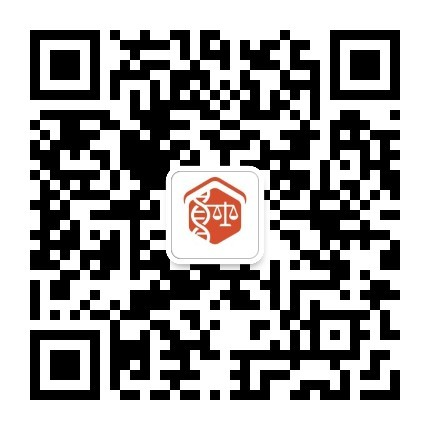
投稿与配图要求见 CONTRIBUTING.md（贡献指南 · 配图规范）。
本指南是健康教育与科普内容，不是医疗服务，不构成医疗建议、诊断或治疗方案。
维护方为 DeepoMe 深度甲基，利益关系见利益冲突声明。
文字与配图：CC BY-NC-ND 4.0（署名-非商业-禁止演绎），全文见 LICENSE。配图为 AI 辅助生成 + 人工审核，许可同上（待确认生成工具条款，见 CONTRIBUTING.md 配图规范第 5 条）。